3. JPA في بنية متعددة الطبقات
لدراسة واجهة برمجة تطبيقات JPA، استخدمنا بنية الاختبار التالية:
 |
كانت برامج الاختبار الخاصة بنا عبارة عن تطبيقات وحدة التحكم التي تستعلم عن طبقة JPA مباشرةً. وبذلك، استكشفنا الطرق الرئيسية لطبقة JPA. كنا نعمل في بيئة تُعرف باسم "Java SE" (الإصدار القياسي). تعمل JPA في بيئات Java SE وJava EE5 (الإصدار المؤسسي) على حد سواء.
والآن بعد أن أصبح لدينا فهم جيد لكل من تكوين جسر العلاقات/الكائنات واستخدام أساليب طبقة JPA، نعود إلى بنية متعددة المستويات أكثر تقليدية:
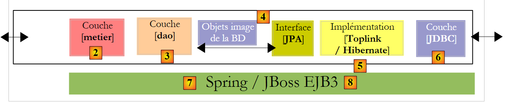 |
سيتم الوصول إلى طبقة [JPA] عبر بنية ثنائية الطبقات تتكون من طبقتي [الأعمال] و[DAO]. سيتم استخدام إطار عمل Spring [7]، متبوعًا بحاوية JBoss EJB3 [8]، لربط هذه الطبقات معًا.
ذكرنا سابقًا أن JPA متاح في بيئتي SE و EE5. توفر بيئة Java EE5 العديد من الخدمات للوصول إلى البيانات الدائمة، بما في ذلك مجمعات الاتصال ومديري المعاملات والمزيد. قد يكون من المفيد للمطور الاستفادة من هذه الخدمات. لم يتم اعتماد بيئة Java EE5 على نطاق واسع بعد (مايو 2007). وهي متاحة حاليًا على Sun Application Server 9.x (Glassfish). خادم التطبيقات هو في الأساس خادم تطبيقات ويب. إذا قمت بإنشاء تطبيق رسومي مستقل باستخدام Swing، فلن تتمكن من الاستفادة من بيئة EE والخدمات التي توفرها. وهذا يمثل مشكلة. بدأنا نرى بيئات EE "مستقلة"، أي تلك التي يمكن استخدامها خارج خادم التطبيقات. وهذا هو الحال مع JBoss EJB3، الذي سنستخدمه في هذا المستند.
في بيئة EE5، يتم تنفيذ الطبقات بواسطة كائنات تسمى EJBs (Enterprise Java Beans). في الإصدارات السابقة من EE، كان يُنظر إلى EJBs (EJB 2.x) على أنها صعبة التنفيذ والاختبار، وأحيانًا كانت أدائها أقل من المتوقع. نحن نميز بين حبوب EJB 2.x "entity" و EJB 2.x "session". باختصار، تتوافق "entity" EJB 2.x مع صف في جدول قاعدة البيانات، و"session" EJB 2.x هي كائن يُستخدم لتنفيذ طبقات [business] و [DAO] في بنية متعددة الطبقات. أحد الانتقادات الرئيسية للطبقات المنفذة باستخدام EJBs هو أنها لا يمكن استخدامها إلا داخل حاويات EJB، وهي خدمة توفرها بيئة EE. وهذا يجعل اختبار الوحدة مشكلة. وبالتالي، في الرسم البياني أعلاه، سيتطلب اختبار الوحدة لطبقات [الأعمال] و[DAO] المبنية باستخدام EJBs إعداد خادم تطبيقات، وهي عملية مرهقة إلى حد ما ولا تشجع المطور حقًا على إجراء الاختبارات بشكل متكرر.
تم إنشاء إطار عمل Spring استجابةً لتعقيد EJB2. يوفر Spring، ضمن بيئة SE، عددًا كبيرًا من الخدمات التي توفرها عادةً بيئات EE. وبالتالي، في قسم "استمرارية البيانات" الذي يهمنا هنا، يوفر Spring مجموعات الاتصال ومديري المعاملات التي تتطلبها التطبيقات. وقد عزز ظهور Spring ثقافة اختبار الوحدات، التي أصبح تنفيذها فجأة أسهل بكثير. يسمح Spring بتنفيذ طبقات التطبيقات باستخدام كائنات Java القياسية (POJOs، Plain Old/Ordinary Java Objects)، مما يتيح إعادة استخدامها في سياقات أخرى. أخيرًا، يدمج العديد من أدوات الجهات الخارجية بشكل شفاف إلى حد ما، ولا سيما أدوات الاستمرارية مثل Hibernate و iBatis و...
تم تصميم Java EE 5 لمعالجة أوجه القصور في مواصفات EE السابقة. تطورت EJB 2.x إلى EJB 3. هذه كائنات POJO مزودة بعلامات تحددها ككائنات خاصة عندما تكون داخل حاوية EJB 3. داخل الحاوية، يمكن لـ EJB3 الاستفادة من خدمات الحاوية (مجمع الاتصالات، مدير المعاملات، إلخ). خارج حاوية EJB3، يصبح EJB3 كائن Java قياسي. يتم تجاهل تعليقات EJB الخاصة به.
أعلاه، قمنا بتصوير Spring وJBoss EJB3 كبنية تحتية (إطار عمل) محتملة لهندستنا متعددة الطبقات. هذه البنية التحتية هي التي ستوفر الخدمات التي نحتاجها: تجمع اتصالات ومدير معاملات.
- مع Spring، سيتم تنفيذ الطبقات باستخدام كائنات POJO. وستقوم هذه الكائنات بالوصول إلى خدمات Spring (مجمع الاتصالات، ومدير المعاملات) من خلال حقن التبعية في كائنات POJO هذه: فعند إنشائها، يقوم Spring بحقن مراجع إلى الخدمات التي ستحتاجها.
- JBoss EJB3 هو حاوية EJB قادرة على العمل خارج خادم التطبيقات. مبدأ تشغيلها (من وجهة نظر المطور) مشابه للمبدأ الموصوف لـ Spring. سنجد بعض الاختلافات.
سنختتم هذا المستند بمثال لتطبيق ويب ثلاثي الطبقات — بسيط ولكنه تمثيلي:
 |
3.1. المثال 1: Spring / JPA مع كيان Person
نأخذ كيان Person الذي تمت مناقشته في القسم 2.1 وندمجه في بنية متعددة الطبقات حيث يتم دمج الطبقات باستخدام Spring ويتم تنفيذ طبقة الاستمرارية بواسطة Hibernate.
 |
يُفترض أن يكون لدى القارئ فهم أساسي لـ Spring. إذا لم يكن الأمر كذلك، يمكنك قراءة الوثيقة التالية، التي تشرح مفهوم حقن التبعية، الذي يمثل جوهر Spring:
[ref3]: Spring IoC (انعكاس التحكم) [http://tahe.developpez.com/java/springioc].
3.1.1. مشروع Eclipse/Spring/Hibernate " "
مشروع Eclipse هو كما يلي:
 |
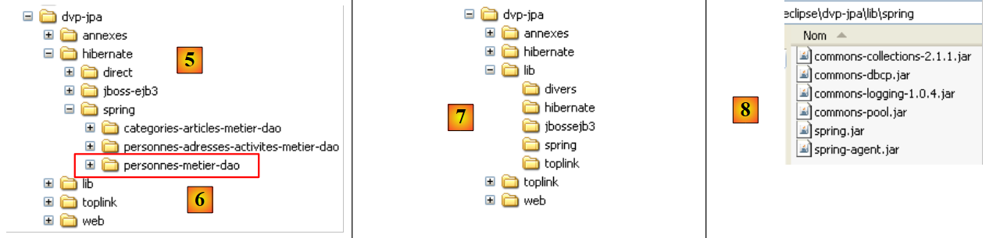 |
- في [1]: مشروع Eclipse. يمكن العثور عليه في [6] ضمن أمثلة البرنامج التعليمي [5]. سنقوم باستيراده.
- في [2]: كود Java للطبقات المقدمة في الحزم:
- [entities]: حزمة كيانات JPA
- [dao]: طبقة الوصول إلى البيانات — استنادًا إلى طبقة JPA
- [service]: طبقة خدمة بدلاً من طبقة الأعمال. سنستخدم خدمة المعاملات الخاصة بالحاوية هنا.
- [tests]: تحتوي على برامج الاختبار.
- في [3]: تحتوي مكتبة [jpa-spring] على ملفات JAR المطلوبة من قبل Spring (انظر أيضًا [7] و [8]).
- في [4]: يحتوي المجلد [conf] على ملفات تكوين Spring لكل نظام من أنظمة إدارة قواعد البيانات المستخدمة في هذا البرنامج التعليمي.
3.1.2. كيانات JPA
 |
لا يوجد سوى كيان واحد يتم إدارته هنا، وهو كيان Person الذي تمت مناقشته في القسم 2.1، وتظهر تهيئته أدناه:
package entites;
...
@Entity
@Table(name="jpa01_hb_personne")
public class Personne {
@Id
@Column(name = "ID", nullable = false)
@GeneratedValue(strategy = GenerationType.AUTO)
private Integer id;
@Column(name = "VERSION", nullable = false)
@Version
private int version;
@Column(name = "NOM", length = 30, nullable = false, unique = true)
private String nom;
@Column(name = "PRENOM", length = 30, nullable = false)
private String prenom;
@Column(name = "DATENAISSANCE", nullable = false)
@Temporal(TemporalType.DATE)
private Date datenaissance;
@Column(name = "MARIE", nullable = false)
private boolean marie;
@Column(name = "NBENFANTS", nullable = false)
private int nbenfants;
// manufacturers
public Personne() {
}
public Personne(String nom, String prenom, Date datenaissance, boolean marie,
int nbenfants) {
...
}
// toString
public String toString() {
return String.format("[%d,%d,%s,%s,%s,%s,%d]", getId(), getVersion(),
getNom(), getPrenom(), new SimpleDateFormat("dd/MM/yyyy")
.format(getDatenaissance()), isMarie(), getNbenfants());
}
// getters and setters
...
}
3.1.3. طبقة [ DAO]
 | 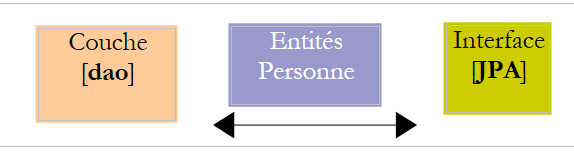 |
توفر طبقة [DAO] واجهة IDao التالية:
package dao;
import java.util.List;
import entites.Personne;
public interface IDao {
// find a person via his/her login
public Personne getOne(Integer id);
// get all the people
public List<Personne> getAll();
// save a person
public Personne saveOne(Personne personne);
// update a person
public Personne updateOne(Personne personne);
// delete a person via his/her login
public void deleteOne(Integer id);
// get people whose name corresponds to a model
public List<Personne> getAllLike(String modele);
}
تنفيذ [Dao] لهذه الواجهة هو كما يلي:
package dao;
import java.util.List;
import javax.persistence.EntityManager;
import javax.persistence.PersistenceContext;
import entites.Personne;
public class Dao implements IDao {
@PersistenceContext
private EntityManager em;
// supprimer une personne via son identifiant
public void deleteOne(Integer id) {
Personne personne = em.find(Personne.class, id);
if (personne == null) {
throw new DaoException(2);
}
em.remove(personne);
}
@SuppressWarnings("unchecked")
// obtenir toutes les personnes
public List<Personne> getAll() {
return em.createQuery("select p from Personne p").getResultList();
}
@SuppressWarnings("unchecked")
// obtenir les personnes dont le nom correspond àun modèle
public List<Personne> getAllLike(String modele) {
return em.createQuery("select p from Personne p where p.nom like :modele")
.setParameter("modele", modele).getResultList();
}
// obtenir une personne via son identifiant
public Personne getOne(Integer id) {
return em.find(Personne.class, id);
}
// sauvegarder une personne
public Personne saveOne(Personne personne) {
em.persist(personne);
return personne;
}
// mettre à jour une personne
public Personne updateOne(Personne personne) {
return em.merge(personne);
}
}
- أولاً، لاحظ بساطة تنفيذ [Dao]. ويرجع ذلك إلى استخدام طبقة JPA، التي تتولى معظم أعمال الوصول إلى البيانات.
- السطر 10: تنفذ فئة [Dao] واجهة [IDao]
- السطر 13: سيتم استخدام كائن [EntityManager] لمعالجة سياق ثبات JPA. للراحة، سنشير إليه أحيانًا باسم سياق الثبات نفسه. سيحتوي سياق الثبات على كيانات Person.
- السطر 12: لم يتم تهيئة الحقل [EntityManager em] في أي مكان في الكود. سيتم تهيئته بواسطة Spring عند بدء تشغيل التطبيق. إن تعليق JPA @PersistenceContext في السطر 12 هو الذي يوجه Spring لحقن مدير سياق الاستمرارية في em.
- الأسطر 26-28: يتم الحصول على قائمة بجميع الأشخاص عبر استعلام JPQL.
- الأسطر 32-35: يتم استرداد قائمة بجميع الأشخاص الذين تتطابق أسماؤهم مع نمط معين عبر استعلام JPQL.
- الأسطر 38–40: يتم استرداد الشخص ذي المعرف المحدد باستخدام طريقة `find` في واجهة برمجة تطبيقات JPA. وتُرجع مؤشرًا فارغًا (null) في حالة عدم وجود الشخص.
- الأسطر 43-46: يتم جعل الشخص دائمًا باستخدام طريقة `persist` في واجهة برمجة تطبيقات JPA. تجعل هذه الطريقة الشخص دائمًا.
- الأسطر 49-51: يتم تحديث الشخص باستخدام طريقة `merge` في واجهة برمجة تطبيقات JPA. لا يكون لهذه الطريقة معنى إلا إذا كان الشخص الذي يتم تحديثه قد تم فصله مسبقًا. تجعل هذه الطريقة الشخص الذي تم إنشاؤه بهذه الطريقة ثابتًا.
- الأسطر 16-22: يتم حذف الشخص الذي تم تمرير معرفه كمعلمة في خطوتين:
- السطر 17: يتم البحث عنه في سياق الاستمرارية
- الأسطر 18-20: إذا لم يتم العثور عليه، يتم إصدار استثناء برمز الخطأ 2
- السطر 21: إذا تم العثور عليه، يتم إزالته من سياق الاستمرارية باستخدام طريقة remove في واجهة برمجة تطبيقات JPA.
- ما لا يظهر في هذه المرحلة هو أن كل طريقة سيتم تنفيذها ضمن معاملة تبدأها طبقة [الخدمة].
يحتوي التطبيق على نوع استثناء خاص به يسمى [DaoException]:
package dao;
@SuppressWarnings("serial")
public class DaoException extends RuntimeException {
// error code
private int code;
public DaoException(int code) {
super();
this.code = code;
}
public DaoException(String message, int code) {
super(message);
this.code = code;
}
public DaoException(Throwable cause, int code) {
super(cause);
this.code = code;
}
public DaoException(String message, Throwable cause, int code) {
super(message, cause);
this.code = code;
}
// getter and setter
public int getCode() {
return code;
}
public void setCode(int code) {
this.code = code;
}
}
- السطر 4: [DaoException] يمتد من [RuntimeException]. ولذلك فهو نوع من الاستثناءات التي لا يطلب منا المُجمِّع معالجتها باستخدام كتلة try/catch أو تضمينها في توقيعات الطرق. لهذا السبب، لا يتم تضمين [DaoException] في توقيع الدالة [deleteOne] للواجهة [IDao]. وهذا يسمح بتنفيذ الواجهة بواسطة فئة ترمي نوعًا مختلفًا من الاستثناءات، بشرط أن تكون مشتقة أيضًا من [RuntimeException].
- للتمييز بين الأخطاء التي قد تحدث، نستخدم رمز الخطأ في السطر 7. المنشئات الثلاثة في الأسطر 14 و19 و24 هي منشئات الفئة الأصلية [RuntimeException]، التي أضفنا إليها معلمة: رمز الخطأ الذي نريد تعيينه للاستثناء.
3.1.4. طبقة [خدمة business/ ]
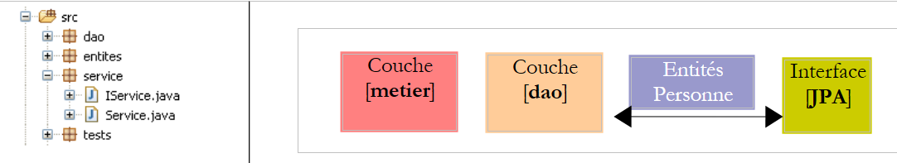 |
توفر طبقة [الخدمة] واجهة [IService] التالية:
package service;
import java.util.List;
import entites.Personne;
public interface IService {
// find a person via his/her login
public Personne getOne(Integer id);
// get all the people
public List<Personne> getAll();
// save a person
public Personne saveOne(Personne personne);
// update a person
public Personne updateOne(Personne personne);
// delete a person via his/her login
public void deleteOne(Integer id);
// get people whose names match a model
public List<Personne> getAllLike(String modele);
// delete several people at once
public void deleteArray(Personne[] personnes);
// save several people at once
public Personne[] saveArray(Personne[] personnes);
// update several people at once
public Personne[] updateArray(Personne[] personnes);
}
- الأسطر 8–24: ترث واجهة [IService] الطرق من واجهة [IDao]
- السطر 27: تسمح لك الطريقة [deleteArray] بحذف مجموعة من الأشخاص ضمن معاملة واحدة: إما حذف جميع الأشخاص أو عدم حذف أي منهم.
- السطران 30 و33: طرق مشابهة لـ [deleteArray] لحفظ (السطر 30) أو تحديث (السطر 33) مجموعة من الأشخاص ضمن معاملة واحدة.
فيما يلي تنفيذ [Service] لواجهة [IService]:
package service;
...
// all class methods take place in a transaction
@Transactional
public class Service implements IService {
// layer [dao]
private IDao dao;
public IDao getDao() {
return dao;
}
public void setDao(IDao dao) {
this.dao = dao;
}
// delete several people at once
public void deleteArray(Personne[] personnes) {
for (Personne p : personnes) {
dao.deleteOne(p.getId());
}
}
// delete a person via his/her login
public void deleteOne(Integer id) {
dao.deleteOne(id);
}
// get all the people
public List<Personne> getAll() {
return dao.getAll();
}
// get people whose names match a model
public List<Personne> getAllLike(String modele) {
return dao.getAllLike(modele);
}
// find a person via his/her login
public Personne getOne(Integer id) {
return dao.getOne(id);
}
// save several people at once
public Personne[] saveArray(Personne[] personnes) {
Personne[] personnes2 = new Personne[personnes.length];
for (int i = 0; i < personnes.length; i++) {
personnes2[i] = dao.saveOne(personnes[i]);
}
return personnes2;
}
// save a person
public Personne saveOne(Personne personne) {
return dao.saveOne(personne);
}
// update several people at once
public Personne[] updateArray(Personne[] personnes) {
Personne[] personnes2 = new Personne[personnes.length];
for (int i = 0; i < personnes.length; i++) {
personnes2[i] = dao.updateOne(personnes[i]);
}
return personnes2;
}
// update a person
public Personne updateOne(Personne personne) {
return dao.updateOne(personne);
}
}
- السطر 6: تشير علامة Spring @Transactional إلى أن جميع الطرق في الفئة يجب أن تُنفَّذ ضمن معاملة. ستُبدأ المعاملة قبل بدء تنفيذ الطريقة وتُغلق بعد التنفيذ. إذا حدث استثناء من النوع [RuntimeException] أو فئة فرعية أثناء تنفيذ الطريقة، فإن التراجع التلقائي يلغي المعاملة بأكملها؛ وإلا، فإن الإقرار التلقائي يصادق عليها. لاحظ أن كود Java لا يحتاج إلى القلق بشأن المعاملات. فهي تُدار بواسطة Spring.
- السطر 10: إشارة إلى طبقة [dao]. سنرى لاحقًا أن Spring يقوم بتهيئة هذه الإشارة عند بدء تشغيل التطبيق.
- تستدعي طرق [Service] ببساطة طرق واجهة [IDao dao] من السطر 10. سنترك للقارئ مراجعة الكود. لا توجد صعوبات خاصة.
- ذكرنا سابقًا أن كل طريقة من طرق [Service] تعمل ضمن معاملة. ترتبط هذه المعاملة بخيط تنفيذ الطريقة. ضمن هذا الخيط، يتم تنفيذ طرق من طبقة [dao]. سيتم ربط هذه الطرق تلقائيًا بمعاملة خيط التنفيذ. على سبيل المثال، يتعين على طريقة [deleteArray] (السطر 21) تنفيذ طريقة [deleteOne] من طبقة [dao] N مرات. ستتم عمليات التنفيذ N هذه ضمن مؤشر ترابط التنفيذ الخاص بالطريقة [deleteArray]، وبالتالي ضمن نفس المعاملة. لذلك، سيتم إما تنفيذها جميعًا إذا سارت الأمور على ما يرام، أو التراجع عنها جميعًا في حالة حدوث استثناء في أي من عمليات التنفيذ N للطريقة [deleteOne] في طبقة [dao].
3.1.5. تكوين الطبقة
 |  |
يتم تكوين طبقات [service] و[dao] و[JPA] من خلال الملفين المذكورين أعلاه: [META-INF/persistence.xml] و[spring-config.xml]. يجب أن يكون كلا الملفين موجودين في مسار فئات التطبيق، ولهذا السبب تم وضعهما في مجلد [src] الخاص بمشروع Eclipse. واسم الملف [spring-config.xml] هو اسم اختياري.
persistence.xml
<?xml version="1.0" encoding="UTF-8"?>
<persistence version="1.0" xmlns="http://java.sun.com/xml/ns/persistence" xmlns:xsi="http://www.w3.org/2001/XMLSchema-instance"
xsi:schemaLocation="http://java.sun.com/xml/ns/persistence http://java.sun.com/xml/ns/persistence/persistence_1_0.xsd">
<persistence-unit name="jpa" transaction-type="RESOURCE_LOCAL" />
</persistence>
- السطر 4: يعلن الملف عن وحدة استمرارية باسم jpa تستخدم معاملات "محلية"، أي معاملات لا يوفرها حاوية EJB3. يتم إنشاء هذه المعاملات وإدارتها بواسطة Spring ويتم تكوينها في ملف [spring-config.xml].
spring-config.xml
<?xml version="1.0" encoding="UTF-8"?>
<beans xmlns="http://www.springframework.org/schema/beans"
xmlns:xsi="http://www.w3.org/2001/XMLSchema-instance"
xmlns:tx="http://www.springframework.org/schema/tx"
xsi:schemaLocation="http://www.springframework.org/schema/beans http://www.springframework.org/schema/beans/spring-beans-2.0.xsd http://www.springframework.org/schema/tx http://www.springframework.org/schema/tx/spring-tx-2.0.xsd">
<!-- application layers -->
<bean id="dao" class="dao.Dao" />
<bean id="service" class="service.Service">
<property name="dao" ref="dao" />
</bean>
<!-- persistence layer JPA -->
<bean id="entityManagerFactory"
class="org.springframework.orm.jpa.LocalContainerEntityManagerFactoryBean">
<property name="dataSource" ref="dataSource" />
<property name="jpaVendorAdapter">
<bean
class="org.springframework.orm.jpa.vendor.HibernateJpaVendorAdapter">
<!--
<property name="showSql" value="true" />
-->
<property name="databasePlatform"
value="org.hibernate.dialect.MySQL5InnoDBDialect" />
<property name="generateDdl" value="true" />
</bean>
</property>
<property name="loadTimeWeaver">
<bean
class="org.springframework.instrument.classloading.InstrumentationLoadTimeWeaver" />
</property>
</bean>
<!-- data source DBCP -->
<bean id="dataSource"
class="org.apache.commons.dbcp.BasicDataSource"
destroy-method="close">
<property name="driverClassName" value="com.mysql.jdbc.Driver" />
<property name="url" value="jdbc:mysql://localhost:3306/jpa" />
<property name="username" value="jpa" />
<property name="password" value="jpa" />
</bean>
<!-- transaction manager -->
<tx:annotation-driven transaction-manager="txManager" />
<bean id="txManager"
class="org.springframework.orm.jpa.JpaTransactionManager">
<property name="entityManagerFactory"
ref="entityManagerFactory" />
</bean>
<!-- translation of exceptions -->
<bean
class="org.springframework.dao.annotation.PersistenceExceptionTranslationPostProcessor" />
<!-- persistence annotations -->
<bean
class="org.springframework.orm.jpa.support.PersistenceAnnotationBeanPostProcessor" />
</beans>
- الأسطر 2-5: العلامة الجذرية <beans> لملف التكوين. لن نعلق على السمات المختلفة لهذه العلامة. تأكد من نسخها ولصقها بعناية، لأن أي خطأ في أي من هذه السمات قد يتسبب في أخطاء يصعب فهمها في بعض الأحيان.
- السطر 8: حبة "dao" هي إشارة إلى مثيل لفئة [dao.Dao]. سيتم إنشاء مثيل واحد (singleton) وسيقوم بتنفيذ طبقة [dao] للتطبيق.
- الأسطر 9-11: إنشاء مثيل لطبقة [service]. حبة "service" هي إشارة إلى مثيل لفئة [service.Service]. سيتم إنشاء مثيل واحد (singleton) وسيقوم بتنفيذ طبقة [service] للتطبيق. لقد رأينا أن فئة [service.Service] تحتوي على حقل خاص [IDao dao]. يتم تهيئة هذا الحقل في السطر 10 بواسطة حبة "dao" المحددة في السطر 8.
- في النهاية، قامت الأسطر 8–11 بتكوين طبقتي [dao] و[service]. سنرى لاحقًا متى وكيف سيتم إنشاء مثيلات لهما.
- الأسطر 35–42: يتم تعريف مصدر البيانات. وقد سبق أن تعرفنا على مفهوم مصدر البيانات عند دراسة كيانات JPA باستخدام Hibernate:
 |
في الأعلى، كان من الممكن تسمية [c3p0]، المشار إليه بـ "مجمع الاتصالات"، بـ "مصدر البيانات". يوفر مصدر البيانات خدمة "مجمع الاتصالات". مع Spring، سنستخدم مصدر بيانات بخلاف [c3p0]. وهو [DBCP] من مشروع Apache Commons DBCP [http://jakarta.apache.org/commons/dbcp/]. تم وضع أرشيفات [DBCP] في مكتبة المستخدم [jpa-spring]:
 |
- الأسطر 38–41: لإنشاء اتصالات مع قاعدة البيانات المستهدفة، يحتاج مصدر البيانات إلى معرفة برنامج تشغيل JDBC المستخدم (السطر 38)، وعنوان URL لقاعدة البيانات (السطر 39)، واسم مستخدم الاتصال، وكلمة المرور الخاصة به (الأسطر 40–41).
- الأسطر 14–32: تكوين طبقة JPA
- الأسطر 14–15: تعريف حبة [EntityManagerFactory] قادرة على إنشاء كائنات [EntityManager] لإدارة سياقات الاستمرارية. يتم توفير الفئة التي تم إنشاء مثيل لها [LocalContainerEntityManagerFactoryBean] بواسطة Spring. وهي تتطلب عددًا من المعلمات لإنشاء مثيل لها، محددة في الأسطر 16–31.
- السطر 16: مصدر البيانات الذي سيتم استخدامه للحصول على اتصالات بنظام إدارة قواعد البيانات (DBMS). هذا هو مصدر [DBCP] المحدد في الأسطر 35-42.
- الأسطر 17-27: تطبيق JPA المراد استخدامه
- الأسطر 18-26: تعريف Hibernate (السطر 19) باعتباره تطبيق JPA المطلوب استخدامه
- الأسطر 23-24: لهجة SQL التي يجب أن يستخدمها Hibernate مع نظام إدارة قواعد البيانات المستهدف، وهو في هذه الحالة MySQL5.
- السطر 25: يطلب إنشاء قاعدة البيانات (حذف وإنشاء) عند بدء تشغيل التطبيق.
- الأسطر 28–31: تعريف "محمل الفئات". لا يمكنني شرح دور هذا الفول الذي يستخدمه EntityManagerFactory في طبقة JPA بوضوح. ومع ذلك، فإنه ينطوي على تمرير اسم أرشيف إلى JVM التي تشغل التطبيق، حيث ستدير محتويات هذا الأرشيف تحميل الفئات عند بدء تشغيل التطبيق. هنا، هذا الأرشيف هو [spring-agent.jar]، الموجود في مكتبة المستخدم [jpa-spring] (انظر أعلاه). سنرى أن Hibernate لا يحتاج إلى هذا الوكيل، ولكن Toplink يحتاج إليه.
- الأسطر 45-50: تحدد مدير المعاملات الذي سيتم استخدامه
- السطر 45: يشير إلى أن المعاملات تُدار باستخدام تعليقات Java (كان من الممكن أيضًا إعلانها في spring-config.xml). على وجه التحديد، يشير هذا إلى التعليق @Transactional الموجود في فئة [Service] (السطر 6).
- الأسطر 46-50: مدير المعاملات
- السطر 47: مدير المعاملات هو فئة مقدمة من Spring
- الأسطر 48-49: يحتاج مدير المعاملات في Spring إلى معرفة EntityManagerFactory الذي يدير طبقة JPA. وهذا هو المحدد في الأسطر 14-32.
- السطور 57–58: تحدد الفئة التي تدير علامات استمرارية Spring الموجودة في كود Java، مثل علامة @PersistenceContext في فئة [dao.Dao] (السطر 12).
- السطران 53-54: يحددان فئة Spring التي تدير، على وجه الخصوص، تعليق @Repository، الذي يجعل الفئة المُعلَّمة بهذه الطريقة مؤهلة لترجمة الاستثناءات الأصلية من برنامج تشغيل JDBC الخاص بنظام إدارة قواعد البيانات (DBMS) إلى استثناءات Spring عامة من النوع [DataAccessException]. تغلف هذه الترجمة استثناء JDBC الأصلي في نوع [DataAccessException] مع فئات فرعية متنوعة:

يسمح هذا الترجمة لبرنامج العميل بمعالجة الاستثناءات بشكل عام بغض النظر عن نظام إدارة قواعد البيانات المستهدف. لم نستخدم تعليق @Repository في كود Java الخاص بنا. لذلك، فإن السطرين 53-54 غير ضروريين. تركناهما فقط لأغراض إعلامية.
لقد انتهينا من ملف تكوين Spring. إنه معقد، ولا تزال العديد من الجوانب غير واضحة. وقد تم أخذه من وثائق Spring. لحسن الحظ، غالبًا ما يقتصر تكييفه مع المواقف المختلفة على تعديلين:
- قاعدة البيانات المستهدفة: الأسطر 38-41. سنقدم مثالاً على Oracle.
- تنفيذ JPA: الأسطر 14-32. سنقدم مثالاً على TopLink.
3.1.6. برنامج العميل [ InitDB]
سنقوم الآن بكتابة أول عميل للبنية الموصوفة أعلاه:
 |
فيما يلي كود [InitDB]:
package tests;
...
public class InitDB {
// service layer
private static IService service;
// manufacturer
public static void main(String[] args) throws ParseException {
// application configuration
ApplicationContext ctx = new ClassPathXmlApplicationContext("spring-config.xml");
// service layer
service = (IService) ctx.getBean("service");
// empty the base
clean();
// fill it
fill();
// a visual check
dumpPersonnes();
}
// table content display
private static void dumpPersonnes() {
System.out.format("[personnes]%n");
for (Personne p : service.getAll()) {
System.out.println(p);
}
}
// table filling
public static void fill() throws ParseException {
// creating people
Personne p1 = new Personne("p1", "Paul", new SimpleDateFormat("dd/MM/yy").parse("31/01/2000"), true, 2);
Personne p2 = new Personne("p2", "Sylvie", new SimpleDateFormat("dd/MM/yy").parse("05/07/2001"), false, 0);
// we save
service.saveArray(new Personne[] { p1, p2 });
}
// deleting table items
public static void clean() {
for (Personne p : service.getAll()) {
service.deleteOne(p.getId());
}
}
}
- السطر 12: يُستخدم ملف [spring-config.xml] لإنشاء كائن [ApplicationContext ctx]، وهو تمثيل للملف في الذاكرة. يتم إنشاء مثيلات للـ beans المُعرَّفة في [spring-config.xml] في هذه المرحلة.
- السطر 14: يُطلب من سياق التطبيق ctx مرجعًا إلى طبقة [service]. ونعلم أن هذه الطبقة ممثلة بواسطة عنصر يُسمى "service".
- السطر 16: يتم مسح قاعدة البيانات باستخدام طريقة clean في الأسطر 41–45:
- الأسطر 42–44: نطلب قائمة بجميع المستخدمين من سياق الاستمرارية ونقوم بتكرارها لحذفها واحدًا تلو الآخر. قد تتذكر أن [spring-config.xml] يحدد أنه يجب إنشاء قاعدة البيانات عند بدء تشغيل التطبيق. لذلك، في حالتنا، لا داعي لاستدعاء طريقة `clean` لأننا نبدأ بقاعدة بيانات فارغة.
- السطر 18: تعمل طريقة fill على ملء قاعدة البيانات. وهذا محدد في الأسطر 32-38:
- السطران 34-35: يتم إنشاء شخصين
- السطر 37: يُطلب من طبقة [service] جعلهما دائمين.
- السطر 20: تعرض طريقة `dumpPersonnes` الأشخاص الدائمين. وهي محددة في الأسطر 24-29
- الأسطر 26-28: نطلب قائمة بجميع الأشخاص الدائمين من طبقة [service] ونعرضهم على وحدة التحكم.
يؤدي تشغيل [InitDB] إلى النتيجة التالية:
3.1.7. اختبارات الوحدة [ TestNG]
يتم وصف تثبيت المكون الإضافي [TestNG] في القسم 5.2.4. وفيما يلي كود برنامج [TestNG]:
package tests;
....
public class TestNG {
// service layer
private IService service;
@BeforeClass
public void init() {
// log
log("init");
// application configuration
ApplicationContext ctx = new ClassPathXmlApplicationContext("spring-config.xml");
// service layer
service = (IService) ctx.getBean("service");
}
@BeforeMethod
public void setUp() throws ParseException {
// empty the base
clean();
// fill it
fill();
}
// logs
private void log(String message) {
System.out.println("----------- " + message);
}
// table content display
private void dump() {
log("dump");
System.out.format("[personnes]%n");
for (Personne p : service.getAll()) {
System.out.println(p);
}
}
// table filling
public void fill() throws ParseException {
log("fill");
// creating people
Personne p1 = new Personne("p1", "Paul", new SimpleDateFormat("dd/MM/yy").parse("31/01/2000"), true, 2);
Personne p2 = new Personne("p2", "Sylvie", new SimpleDateFormat("dd/MM/yy").parse("05/07/2001"), false, 0);
// we save
service.saveArray(new Personne[] { p1, p2 });
}
// deleting table items
public void clean() {
log("clean");
for (Personne p : service.getAll()) {
service.deleteOne(p.getId());
}
}
@Test()
public void test01() {
...
}
...
}
- السطر 9: تحدد علامة @BeforeClass الطريقة التي سيتم تنفيذها لتهيئة التكوين المطلوب للاختبارات. يتم تنفيذها قبل تشغيل الاختبار الأول. تحدد علامة @AfterClass، التي لم يتم استخدامها هنا، الطريقة التي سيتم تنفيذها بمجرد تشغيل جميع الاختبارات.
- الأسطر 10-17: تستخدم الطريقة init، المُعلَّمة بـ @BeforeClass، ملف تكوين Spring لإنشاء مثيلات لمختلف طبقات التطبيق والحصول على مرجع إلى طبقة [service]. ثم تستخدم جميع الاختبارات هذا المرجع.
- السطر 19: تحدد علامة @BeforeMethod الطريقة التي سيتم تنفيذها قبل كل اختبار. تحدد علامة @AfterMethod، التي لم يتم استخدامها هنا، الطريقة التي سيتم تنفيذها بعد كل اختبار.
- الأسطر 20-25: تقوم طريقة setUp، المُعلَّمة بـ @BeforeMethod، بمسح قاعدة البيانات (الأسطر 52-56) ثم ملؤها بشخصين (الأسطر 42-49).
- السطر 59: تحدد علامة @Test طريقة الاختبار التي سيتم تنفيذها. سنقوم الآن بوصف هذه الاختبارات.
@Test()
public void test01() {
log("test1");
dump();
// list of persons
List<Personne> personnes = service.getAll();
assert 2 == personnes.size();
}
@Test()
public void test02() {
log("test2");
// search for people by name
List<Personne> personnes = service.getAllLike("p1%");
assert 1 == personnes.size();
Personne p1 = personnes.get(0);
assert "Paul".equals(p1.getPrenom());
}
@Test()
public void test03() throws ParseException {
log("test3");
// create a new person
Personne p3 = new Personne("p3", "x", new SimpleDateFormat("dd/MM/yy").parse("05/07/2001"), false, 0);
// we keep it
service.saveOne(p3);
// we ask for it again
Personne loadedp3 = service.getOne(p3.getId());
// we display it
System.out.println(loadedp3);
// check
assert "p3".equals(loadedp3.getNom());
}
- الأسطر 2–8: الاختبار 01. تذكر أنه في بداية كل اختبار، تحتوي قاعدة البيانات على شخصين باسم p1 و p2.
- السطر 6: نطلب قائمة الأشخاص
- السطر 7: نتحقق من أن عدد الأشخاص في القائمة المعادة هو 2
- السطر 14: نطلب قائمة الأشخاص الذين يبدأ اسم عائلتهم بـ p1
- نتحقق من أن القائمة الناتجة تحتوي على عنصر واحد فقط (السطر 15) وأن الاسم الأول للشخص الوحيد الذي تم العثور عليه هو "Paul" (السطر 17)
- السطر 24: إنشاء شخص باسم p3
- السطر 25: نحتفظ به
- السطر 28: نسترده من سياق الاستمرارية للتحقق
- السطر 32: نتحقق من أن الشخص الذي تم استرجاعه يحمل بالفعل الاسم p3.
@Test()
public void test04() throws ParseException {
log("test4");
// we load person p1
List<Personne> personnes = service.getAllLike("p1%");
Personne p1 = personnes.get(0);
// we display it
System.out.println(p1);
// we check
assert "p1".equals(p1.getNom());
int version1 = p1.getVersion();
// change the first name
p1.setPrenom("x");
// we save
service.updateOne(p1);
// recharge
p1 = service.getOne(p1.getId());
// we display it
System.out.println(p1);
// check that the version has been incremented
assert (version1 + 1) == p1.getVersion();
}
- السطر 5: نطلب الشخص p1
- السطر 10: نتحقق من اسمه
- السطر 11: نسجل رقم الإصدار الخاص به
- السطر 13: نقوم بتعديل اسمه الأول
- السطر 15: حفظ التغيير
- السطر 17: نطلب الشخص p1 مرة أخرى
- السطر 21: نتحقق من أن رقم الإصدار قد زاد بمقدار 1
@Test()
public void test05() {
log("test5");
// we load person p2
List<Personne> personnes = service.getAllLike("p2%");
Personne p2 = personnes.get(0);
// we display it
System.out.println(p2);
// we check
assert "p2".equals(p2.getNom());
// delete person p2
service.deleteOne(p2.getId());
// recharge it
p2 = service.getOne(p2.getId());
// check that a null pointer has been obtained
assert null == p2;
// table is displayed
dump();
}
- السطر 5: نطلب الشخص p2
- السطر 10: نتحقق من اسمه
- السطر 12: حذفه
- السطر 14: نطلبه مرة أخرى
- السطر 16: نتأكد من أننا لم نعثر عليه
@Test()
public void test06() throws ParseException {
log("test6");
// on crée un tableau de 2 personnes de même nom (enfreint la règle d'unicité du nom)
Personne[] personnes = { new Personne("p3", "x", new SimpleDateFormat("dd/MM/yy").parse("31/01/2000"), true, 2),
new Personne("p4", "x", new SimpleDateFormat("dd/MM/yy").parse("31/01/2000"), true, 2),
new Personne("p4", "x", new SimpleDateFormat("dd/MM/yy").parse("31/01/2000"), true, 2)};
// on sauvegarde ce tableau - on doit obtenir une exception et un rollback
boolean erreur = false;
try {
service.saveArray(personnes);
} catch (RuntimeException e) {
erreur = true;
}
// dump
dump();
// vérifications
assert erreur;
// recherche personne de nom p3
List<Personne> personnesp3 = service.getAllLike("p3%");
assert 0 == personnesp3.size();
// dump
dump();
}
- السطر 5: نقوم بإنشاء مصفوفة من ثلاثة أشخاص، اثنان منهم يحملان نفس الاسم "p4". وهذا يخالف قاعدة التفرد الخاصة باسم @Entity Person:
@Column(name = "NOM", length = 30, nullable = false, unique = true)
private String nom;
- السطر 11: يتم وضع المصفوفة المكونة من ثلاثة أشخاص في سياق الاستمرارية. يجب أن تفشل عملية إضافة الشخص الثاني، p4. نظرًا لأن طريقة [saveArray] تعمل ضمن معاملة، فسيتم التراجع عن أي عمليات إدراج تمت سابقًا. وفي النهاية، لن تتم أي إضافات.
- السطر 18: نتحقق من أن [saveArray] قد أطلقت بالفعل استثناءً
- السطران 20-21: نتحقق من أن الشخص p3، الذي كان من الممكن إضافته، لم تتم إضافته.
@Test()
public void test07() {
log("test7");
// test optimistic locking
// we load person p1
List<Personne> personnes = service.getAllLike("p1%");
Personne p1 = personnes.get(0);
// we display it
System.out.println(p1);
// increase the number of children
int nbEnfants1 = p1.getNbenfants();
p1.setNbenfants(nbEnfants1 + 1);
// save p1
Personne newp1 = service.updateOne(p1);
assert (nbEnfants1 + 1) == newp1.getNbenfants();
System.out.println(newp1);
// we save a second time - we should have an exception because p1 no longer has the correct version
// newp1 has it
boolean erreur = false;
try {
service.updateOne(p1);
} catch (RuntimeException e) {
erreur = true;
}
// check
assert erreur;
// we increase the number of newp1 children
int nbEnfants2 = newp1.getNbenfants();
newp1.setNbenfants(nbEnfants2 + 1);
// save newp1
service.updateOne(newp1);
// recharge
p1 = service.getOne(p1.getId());
// we check
assert (nbEnfants1 + 2) == p1.getNbenfants();
System.out.println(p1);
}
- السطر 6: اطلب الشخص p1
- السطر 12: نزيد عدد الأبناء بمقدار 1
- السطر 14: نقوم بتحديث الشخص p1 في سياق الاستمرارية. تعمل طريقة [updateOne] على جعل الإصدار الجديد newp1 مستمرًا من p1. ويختلف عن p1 برقم الإصدار، الذي يجب أن يكون قد تمت زيادته.
- السطر 15: نتحقق من عدد العناصر التابعة لـ newp1.
- السطر 21: نطلب تحديث الشخص p1 استنادًا إلى الإصدار القديم p1. يجب أن تحدث استثناء لأن p1 ليس أحدث إصدار للشخص p1. أحدث إصدار هو newp1.
- السطر 23: نتحقق من حدوث الخطأ بالفعل
- الأسطر 27–35: نتحقق من أنه إذا تم إجراء تحديث من أحدث إصدار newp1، فإن كل شيء يعمل بشكل صحيح.
@Test()
public void test08() {
log("test8");
// test rollback on updateArray
// we load person p1
List<Personne> personnes = service.getAllLike("p1%");
Personne p1 = personnes.get(0);
// we display it
System.out.println(p1);
// increase the number of children
int nbEnfants1 = p1.getNbenfants();
p1.setNbenfants(nbEnfants1 + 1);
// save 2 modifications, the 2nd of which must fail (person incorrectly initialized)
// because of the transaction, both must be cancelled
boolean erreur = false;
try {
service.updateArray(new Personne[] { p1, new Personne() });
} catch (RuntimeException e) {
erreur = true;
}
// checks
assert erreur;
// we recharge person p1
personnes = service.getAllLike("p1%");
p1 = personnes.get(0);
// her number of children must not have changed
assert nbEnfants1 == p1.getNbenfants();
}
- الاختبار 8 مشابه للاختبار 6: فهو يتحقق من التراجع عن عملية `updateArray` التي تم إجراؤها على مصفوفة من شخصين حيث لم يتم تهيئة الشخص الثاني بشكل صحيح. من منظور JPA، ستولد عملية `merge` على الشخص الثاني — الذي لا يوجد بالفعل — عبارة SQL `insert` ستفشل بسبب قيود `nullable=false` على بعض حقول كيان `Person`.
@Test()
public void test09() {
log("test9");
// test rollback on deleteArray
// dump
dump();
// we load person p1
List<Personne> personnes = service.getAllLike("p1%");
Personne p1 = personnes.get(0);
// we display it
System.out.println(p1);
// we make 2 deletions, the 2nd of which must fail (unknown person)
// because of the transaction, both must be cancelled
boolean erreur = false;
try {
service.deleteArray(new Personne[] { p1, new Personne() });
} catch (RuntimeException e) {
erreur = true;
}
// checks
assert erreur;
// we recharge person p1
personnes = service.getAllLike("p1%");
// check
assert 1 == personnes.size();
// dump
dump();
}
- الاختبار 9 مشابه للاختبار السابق: فهو يتحقق من التراجع عن عملية `deleteArray` على مصفوفة من شخصين حيث لا يوجد الشخص الثاني. ومع ذلك، في هذه الحالة، ترمي الطريقة `[deleteOne]` في طبقة `[dao]` استثناءً.
// optimistic locking - multi-threaded access
@Test()
public void test10() throws Exception {
// add a person
Personne p3 = new Personne("X", "X", new SimpleDateFormat("dd/MM/yyyy").parse("01/02/2006"), true, 0);
service.saveOne(p3);
int id3 = p3.getId();
// creation of N threads for updating the number of children
final int N = 20;
Thread[] taches = new Thread[N];
for (int i = 0; i < taches.length; i++) {
taches[i] = new ThreadMajEnfants("thread n° " + i, service, id3);
taches[i].start();
}
// we wait for the end of threads
for (int i = 0; i < taches.length; i++) {
taches[i].join();
}
// we pick up the person
p3 = service.getOne(id3);
// she must have N children
assert N == p3.getNbenfants();
// delete person p3
service.deleteOne(p3.getId());
// check
p3 = service.getOne(p3.getId());
// we must have a null pointer
assert p3 == null;
}
- الفكرة وراء الاختبار 10 هي تشغيل N خيطًا (السطر 9) لزيادة عدد الأبناء لشخص ما بشكل متوازٍ. نريد التحقق من أن نظام أرقام الإصدارات يمكنه التعامل مع هذا السيناريو. فقد تم إنشاؤه لهذا الغرض.
- السطران 5-6: يتم إنشاء شخص باسم p3 وحفظه. لديه 0 من الأبناء في البداية.
- السطر 7: نسجل معرّفه.
- السطور 9–14: نطلق N خيطًا بشكل متوازٍ، كل منها مكلف بزيادة عدد أبناء p3 بمقدار 1.
- الأسطر 16-18: ننتظر حتى تنتهي جميع الخيوط
- السطر 20: نطلب رؤية الشخص p3
- السطر 22: نتحقق من أن p3 لديه الآن N من الأبناء
- السطر 24: يتم حذف الشخص p3.
خيط [ThreadMajEnfants] هو كما يلي:
package tests;
...
public class ThreadMajEnfants extends Thread {
// thread name
private String name;
// reference on the [service] layer
private IService service;
// the id of the person we're going to work on
private int idPersonne;
// manufacturer
public ThreadMajEnfants(String name, IService service, int idPersonne) {
this.name = name;
this.service = service;
this.idPersonne = idPersonne;
}
// thread core
public void run() {
// follow-up
suivi("lancé");
// we loop until we have succeeded in incrementing by 1
// person's number of children idPersonne
boolean fini = false;
int nbEnfants = 0;
while (!fini) {
// a copy of the idPersonne person is retrieved
Personne personne = service.getOne(idPersonne);
nbEnfants = personne.getNbenfants();
// follow-up
suivi("" + nbEnfants + " -> " + (nbEnfants + 1) + " pour la version " + personne.getVersion());
// increments the number of children by 1
personne.setNbenfants(nbEnfants + 1);
// 10 ms wait to abandon processor
try {
// follow-up
suivi("début attente");
// we pause to let the processor
Thread.sleep(10);
// follow-up
suivi("fin attente");
} catch (Exception ex) {
throw new RuntimeException(ex.toString());
}
// waiting complete - try to validate the copy
// in the meantime, other threads may have modified the original
try {
// we try to modify the original
service.updateOne(personne);
// we passed - the original has been modified
fini = true;
} catch (javax.persistence.OptimisticLockException e) {
// incorrect object version: exception ignored to start again
} catch (org.springframework.transaction.UnexpectedRollbackException e2) {
// with the occasional Spring exception
} catch (RuntimeException e3) {
// another type of exception - it is reassembled
throw e3;
}
}
// follow-up
suivi("a terminé et passé le nombre d'enfants à " + (nbEnfants + 1));
}
// follow-up
private void suivi(String message) {
System.out.println(name + " [" + new Date().getTime() + "] : " + message);
}
}
- الأسطر 15–19: يقوم المنشئ بتخزين المعلومات التي يحتاجها للعمل: اسمه (السطر 16)، والإشارة إلى طبقة [service] التي يجب أن يستخدمها (السطر 17)، ومعرف الشخص p الذي يجب زيادة عدد أطفاله (السطر 18).
- الأسطر 22–66: يتم تنفيذ طريقة [run] بواسطة جميع الخيوط بشكل متوازٍ.
- السطر 29: يحاول الخيط مرارًا وتكرارًا زيادة عدد أطفال الشخص p. ولا يتوقف إلا عندما ينجح.
- السطر 31: يتم الاستعلام عن الشخص p
- السطر 36: يتم زيادة عدد أطفاله في الذاكرة
- الأسطر 38–47: يتم التوقف لمدة 10 مللي ثانية. سيسمح ذلك للخيوط الأخرى بالحصول على نفس إصدار الشخص p. وبالتالي، في نفس الوقت، ستحتفظ عدة خيوط بنفس إصدار الشخص p وسترغب في تعديله. هذا هو السلوك المطلوب.
- السطر 52: بمجرد انتهاء فترة التوقف المؤقت، تطلب الخيط من طبقة [الخدمة] الاحتفاظ بالتغيير. نحن نعلم أن الاستثناءات ستحدث من وقت لآخر، لذلك قمنا بتغليف العملية في كتلة try/catch.
- السطر 55: تُظهر الاختبارات أننا نواجه استثناءات من النوع [javax.persistence.OptimisticLockException]. هذا أمر طبيعي: فهو الاستثناء الذي ترمي به طبقة JPA عندما يحاول مؤشر ترابط تعديل الشخص p دون أن يكون لديه أحدث إصدار منه. يتم تجاهل هذا الاستثناء للسماح لمؤشر الترابط بإعادة محاولة العملية حتى تنجح.
- السطر 57: تظهر الاختبارات أننا نحصل أيضًا على استثناءات من النوع [org.springframework.transaction.UnexpectedRollbackException]. هذا أمر مزعج وغير متوقع. ليس لدي أي تفسير لهذا. نحن الآن نعتمد على Spring، على الرغم من أننا أردنا تجنب ذلك. هذا يعني أنه إذا قمنا بتشغيل تطبيقنا في JBoss EJB3، على سبيل المثال، فسيتعين تغيير كود الخيط. يتم تجاهل استثناء Spring هنا أيضًا للسماح للخيط بإعادة محاولة عملية الزيادة.
- السطر 59: يتم نشر أنواع الاستثناءات الأخرى إلى التطبيق.
عند تشغيل [TestNG]، نحصل على النتائج التالية:
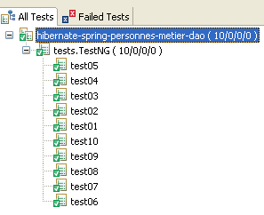
اجتازت جميع الاختبارات العشرة بنجاح.
يستحق الاختبار رقم 10 مزيدًا من التوضيح لأن نجاحه ينطوي على جانب سحري إلى حد ما. دعونا أولاً نراجع تكوين طبقة [dao]:
public class Dao implements IDao {
@PersistenceContext
private EntityManager em;
- السطر 4: يتم حقن كائن [EntityManager] في الحقل em باستخدام تعليق JPA @PersistenceContext. يتم إنشاء مثيل لطبقة [dao] مرة واحدة فقط. وهي عبارة عن كائن فريد يستخدمه جميع الخيوط التي تستخدم طبقة JPA. وبالتالي، يتم مشاركة EntityManager em بين جميع الخيوط. ويمكن التحقق من ذلك من خلال عرض قيمة em في الأسلوب [updateOne] الذي تستخدمه خيوط [ThreadMajEnfants]: فالقيمة هي نفسها لجميع الخيوط.
وبالتالي، قد يتساءل المرء عما إذا كانت الكائنات الدائمة للخيوط المختلفة، التي يديرها EntityManager <bdi dir="ltr" class="odt-ltr-term">em</bdi>—والذي هو نفسه لجميع الخيوط—قد تختلط وتخلق تعارضات فيما بينها. يمكن العثور على مثال لما قد يحدث في <bdi dir="ltr" class="odt-ltr-term">ThreadMajEnfants</bdi>:
while (!fini) {
// on récupère une copie de la personne d'idPersonne
Personne personne = service.getOne(idPersonne);
nbEnfants = personne.getNbenfants();
// suivi
suivi("" + nbEnfants + " -> " + (nbEnfants + 1) + " pour la version " + personne.getVersion());
// incrémente de 1 le nbre d'enfants de la personne
personne.setNbenfants(nbEnfants + 1);
// attente de 10 ms pour abandonner le processeur
try {
// suivi
suivi("début attente");
// on s'interrompt pour laisser le processeur
Thread.sleep(10);
// suivi
suivi("fin attente");
} catch (Exception ex) {
throw new RuntimeException(ex.toString());
}
- السطر 3: يسترد مؤشر الترابط T1 الشخص p
- السطر 8: يزيد عدد أبناء p
- السطر 14: يتوقف الخيط T1 مؤقتًا
يتولى الخيط T2 المهمة ويقوم أيضًا بتنفيذ السطر 3: فهو يطلب نفس الشخص p الذي طلبه T1. إذا كان سياق الاستمرارية للخيوط هو نفسه، فيجب إعادة الشخص p —الموجود بالفعل في السياق بفضل T1— إلى T2. في الواقع، تستخدم طريقة [getOne] طريقة [EntityManager].find الخاصة بواجهة برمجة تطبيقات JPA، ولا تصل هذه الطريقة إلى قاعدة البيانات إلا إذا كان الكائن المطلوب غير موجود في سياق الاستمرارية؛ وإلا، فإنها تعيد الكائن من سياق الاستمرارية. إذا كان هذا هو الحال، فسيحتفظ كل من T1 و T2 بنفس الشخص p. ثم يقوم T2 بزيادة عدد أبناء p بمقدار 1 مرة أخرى (السطر 8). إذا نجح أحد الخيوط في تحديث البيانات بعد التوقف المؤقت، فسيكون عدد أبناء p قد زاد بمقدار 2 وليس بمقدار 1 كما هو متوقع. قد يتوقع المرء عندئذٍ أن تقوم الخيوط N بتعيين عدد الأبناء ليس إلى N بل إلى قيمة أعلى. ومع ذلك، فإن هذا ليس هو الحال. يمكننا بالتالي أن نستنتج أن T1 و T2 لا يمتلكان نفس المرجع p. نتحقق من ذلك من خلال جعل الخيوط تعرض عنوان p: فهو مختلف لكل منها.
وبالتالي يبدو أن الخيوط:
- تشترك في نفس مدير سياق الاستمرارية (EntityManager)
- ولكن لكل منها سياق الاستمرارية الخاص بها.
هذه مجرد افتراضات، وسيكون من المفيد هنا الحصول على رأي خبير.
3.1.8. تغيير نظام إدارة قواعد البيانات (DBMS)
 |
لتغيير نظام إدارة قواعد البيانات (DBMS)، ما عليك سوى استبدال ملف [src/spring-config.xml] [2] بملف [spring-config.xml] الخاص بنظام إدارة قواعد البيانات (DBMS) ذي الصلة الموجود في المجلد [conf] [1].
على سبيل المثال، يبدو ملف [spring-config.xml] الخاص بـ Oracle كما يلي:
<?xml version="1.0" encoding="UTF-8"?>
<beans xmlns="http://www.springframework.org/schema/beans" xmlns:xsi="http://www.w3.org/2001/XMLSchema-instance"
xmlns:tx="http://www.springframework.org/schema/tx"
xsi:schemaLocation="http://www.springframework.org/schema/beans http://www.springframework.org/schema/beans/spring-beans-2.0.xsd http://www.springframework.org/schema/tx http://www.springframework.org/schema/tx/spring-tx-2.0.xsd">
...
<bean id="entityManagerFactory" class="org.springframework.orm.jpa.LocalContainerEntityManagerFactoryBean">
<property name="dataSource" ref="dataSource" />
<property name="jpaVendorAdapter">
<bean class="org.springframework.orm.jpa.vendor.HibernateJpaVendorAdapter">
<!--
<property name="showSql" value="true" />
-->
<property name="databasePlatform" value="org.hibernate.dialect.OracleDialect" />
<property name="generateDdl" value="true" />
</bean>
</property>
<property name="loadTimeWeaver">
<bean class="org.springframework.instrument.classloading.InstrumentationLoadTimeWeaver" />
</property>
</bean>
<!-- data source DBCP -->
<bean id="dataSource" class="org.apache.commons.dbcp.BasicDataSource" destroy-method="close">
<property name="driverClassName" value="oracle.jdbc.OracleDriver" />
<property name="url" value="jdbc:oracle:thin:@localhost:1521:xe" />
<property name="username" value="jpa" />
<property name="password" value="jpa" />
</bean>
...
</beans>
لم يتغير سوى بضعة أسطر مقارنة بالملف نفسه الذي استخدم سابقًا لـ MySQL5:
- السطر 14: لهجة SQL التي يجب أن يستخدمها Hibernate
- الأسطر 25–28: خصائص اتصال JDBC بنظام إدارة قواعد البيانات
يُنصح القراء بتكرار الاختبارات الموصوفة لـ MySQL 5 مع أنظمة إدارة قواعد البيانات الأخرى.
3.1.9. تغيير تطبيق JPA
لنعد إلى بنية الاختبارات السابقة:
 |
نحن نستبدل تطبيق JPA/Hibernate بتطبيق JPA/TopLink. وبما أن TopLink لا يستخدم نفس المكتبات التي يستخدمها Hibernate، فإننا نستخدم مشروع Eclipse جديد:
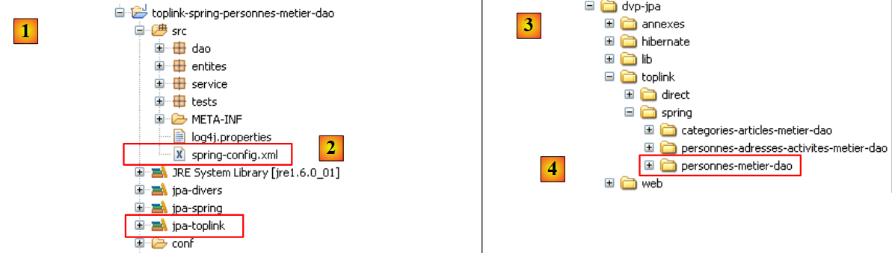 |
- في [1]: مشروع Eclipse. وهو مطابق للمشروع السابق. التغييرات الوحيدة هي ملف التكوين [spring-config.xml] [2] ومكتبة [jpa-toplink]، التي تحل محل مكتبة [jpa-hibernate].
- في [3]: مجلد الأمثلة الخاص بهذا البرنامج التعليمي. في [4]، مشروع Eclipse المراد استيراده.
يصبح ملف التكوين [spring-config.xml] لـ Toplink كما يلي:
<?xml version="1.0" encoding="UTF-8"?>
<!-- the JVM must be launched with the -javaagent:C:\data\2006-2007\eclipse\dvp-jpa\lib\spring\spring-agent.jar argument
(à remplacer par le chemin exact de spring-agent.jar)-->
<beans xmlns="http://www.springframework.org/schema/beans" xmlns:xsi="http://www.w3.org/2001/XMLSchema-instance"
xmlns:tx="http://www.springframework.org/schema/tx"
xsi:schemaLocation="http://www.springframework.org/schema/beans http://www.springframework.org/schema/beans/spring-beans-2.0.xsd http://www.springframework.org/schema/tx http://www.springframework.org/schema/tx/spring-tx-2.0.xsd">
<!-- application layers -->
<bean id="dao" class="dao.Dao" />
<bean id="service" class="service.Service">
<property name="dao" ref="dao" />
</bean>
<bean id="entityManagerFactory" class="org.springframework.orm.jpa.LocalContainerEntityManagerFactoryBean">
<property name="dataSource" ref="dataSource" />
<property name="jpaVendorAdapter">
<bean class="org.springframework.orm.jpa.vendor.TopLinkJpaVendorAdapter">
<!--
<property name="showSql" value="true" />
-->
<property name="databasePlatform" value="oracle.toplink.essentials.platform.database.MySQL4Platform" />
<property name="generateDdl" value="true" />
</bean>
</property>
<property name="loadTimeWeaver">
<bean class="org.springframework.instrument.classloading.InstrumentationLoadTimeWeaver" />
</property>
</bean>
<!-- data source DBCP -->
<bean id="dataSource" class="org.apache.commons.dbcp.BasicDataSource" destroy-method="close">
<property name="driverClassName" value="com.mysql.jdbc.Driver" />
<property name="url" value="jdbc:mysql://localhost:3306/jpa" />
<property name="username" value="jpa" />
<property name="password" value="jpa" />
</bean>
<!-- transaction manager -->
<tx:annotation-driven transaction-manager="txManager" />
<bean id="txManager" class="org.springframework.orm.jpa.JpaTransactionManager">
<property name="entityManagerFactory" ref="entityManagerFactory" />
</bean>
<!-- translation of exceptions -->
<bean class="org.springframework.dao.annotation.PersistenceExceptionTranslationPostProcessor" />
<!-- persistence -->
<bean class="org.springframework.orm.jpa.support.PersistenceAnnotationBeanPostProcessor" />
</beans>
لا يلزم سوى تغيير بضعة أسطر للانتقال من Hibernate إلى Toplink:
- السطر 19: يتم الآن التعامل مع تنفيذ JPA بواسطة Toplink
- السطر 23: تحتوي الخاصية [databasePlatform] على قيمة مختلفة عن تلك المستخدمة مع Hibernate: اسم فئة خاصة بـ Toplink. تم شرح مكان العثور على هذا الاسم في القسم 2.1.15.2.
هذا كل شيء. لاحظ مدى سهولة التبديل بين أنظمة إدارة قواعد البيانات (DBMS) أو تطبيقات JPA باستخدام Spring.
لكننا لم ننتهِ بعد. فعند تشغيل [InitDB]، على سبيل المثال، ستحصل على استثناء يصعب فهمه:
Exception in thread "main" org.springframework.beans.factory.BeanCreationException: Error creating bean with name 'entityManagerFactory' defined in class path resource [spring-config.xml]: Invocation of init method failed; nested exception is java.lang.IllegalStateException: Must start with Java agent to use InstrumentationLoadTimeWeaver. See Spring documentation.
Caused by: java.lang.IllegalStateException: Must start with Java agent to use
تطالبك رسالة الخطأ في السطر 1 بالرجوع إلى وثائق Spring. هناك، ستتعرف أكثر قليلاً على الدور الذي يلعبه إعلان غامض في ملف [spring-config.xml]:
<bean id="entityManagerFactory" class="org.springframework.orm.jpa.LocalContainerEntityManagerFactoryBean">
<property name="dataSource" ref="dataSource" />
<property name="jpaVendorAdapter">
<bean class="org.springframework.orm.jpa.vendor.HibernateJpaVendorAdapter">
<!--
<property name="showSql" value="true" />
-->
<property name="databasePlatform" value="org.hibernate.dialect.OracleDialect" />
<property name="generateDdl" value="true" />
</bean>
</property>
<property name="loadTimeWeaver">
<bean class="org.springframework.instrument.classloading.InstrumentationLoadTimeWeaver" />
</property>
</bean>
يشير السطر 1 من الاستثناء إلى فئة باسم [InstrumentationLoadTimeWeaver]، والتي يمكن العثور عليها في السطر 13 من ملف تكوين Spring. توضح وثائق Spring أن هذه الفئة ضرورية في حالات معينة لتحميل فئات التطبيق، وأنه لكي تعمل، يجب تشغيل JVM مع وكيل. يتم توفير هذا الوكيل بواسطة Spring ويُسمى [spring-agent]:
 |
- يوجد ملف [spring-agent.jar] في المجلد <examples>/lib [1]. وهو مضمن في توزيع Spring 2.x (انظر القسم 5.11).
- في [3]، قم بإنشاء تكوين تشغيل [Run/Run...]
- في [4]، قم بإنشاء تكوين تشغيل Java (هناك أنواع مختلفة من تكوينات التشغيل)
 |
- في [5]، حدد علامة التبويب [Main]
- في [6]، قم بتسمية التكوين
- في [7]، قم بتسمية مشروع Eclipse المرتبط بهذا التكوين (استخدم زر "Browse")
- في [8]، قم بتسمية فئة Java التي تحتوي على الطريقة [main] (استخدم زر "Browse")
- في [9]، انتقل إلى علامة التبويب [Arguments]. هناك، يمكنك تحديد نوعين من الوسيطات:
- في [9]، تلك التي يتم تمريرها إلى طريقة [main]
- في [10]، تلك التي يتم تمريرها إلى JVM التي ستقوم بتنفيذ الكود. يتم تعريف وكيل Spring باستخدام معلمة JVM -javaagent:value. القيمة هي المسار إلى ملف [spring-agent.jar].
- في [11]: احفظ التكوين
- في [12]: تم إنشاء التكوين
- في [13]: نقوم بتشغيله
بمجرد الانتهاء من ذلك، يتم تشغيل [InitDB] ويُنتج نفس النتائج كما هو الحال مع Hibernate. بالنسبة لـ [TestNG]، تابع بنفس الطريقة:
 |
- في [1]، قم بإنشاء تكوين تشغيل [Run/Run...]
- في [2]، قم بإنشاء تكوين تشغيل TestNG
- في [3]، حدد علامة التبويب [Test]
- في [4]، قم بتسمية التكوين
- في [5]، قم بتسمية مشروع Eclipse المرتبط بهذا التكوين (استخدم زر Browse)
- في [6]، قم بتسمية فئة الاختبار (استخدم زر Browse)
 |
- في [7]، انتقل إلى علامة التبويب [Arguments].
- في [8]: قم بتعيين الحجة -javaagent لـ JVM.
- في [9]: احفظ التكوين
- في [10]: تم إنشاء التكوين
- في [11]: قم بتشغيله
بمجرد الانتهاء من ذلك، يتم تشغيل [TestNG] ويُنتج نفس النتائج التي تم الحصول عليها مع Hibernate.
3.2. المثال 2: تكوين JBoss EJB3/JPA مع كيان Person
سنستخدم نفس المثال السابق، ولكن سنقوم بتشغيله في حاوية EJB3، وتحديدًا حاوية JBoss:
 |
عادةً ما يتم دمج حاوية EJB3 في خادم تطبيقات. يوفر JBoss حاوية EJB3 "مستقلة" يمكن استخدامها خارج خادم التطبيقات. سنكتشف أنها توفر خدمات مشابهة لتلك التي يوفرها Spring. سنحاول معرفة أي من هذه الحاويات يثبت أنه الأكثر عملية.
يتم وصف تثبيت حاوية JBoss EJB3 في القسم 5.12.
3.2.1. مشروع Eclipse / JBoss EJB3 / Hibernate
مشروع Eclipse هو كما يلي:
 |
 |
- في [1]: مشروع Eclipse. يمكن العثور عليه في [6] ضمن أمثلة البرنامج التعليمي [5]. سنقوم باستيراده.
- في [2]: كود Java للطبقات المقدمة في الحزم:
- [entities]: حزمة كيانات JPA
- [dao]: طبقة الوصول إلى البيانات — استنادًا إلى طبقة JPA
- [service]: طبقة خدمة بدلاً من طبقة الأعمال. سنستخدم خدمة المعاملات الخاصة بحاوية EJB3.
- [tests]: تحتوي على برامج الاختبار.
- في [3]: تحتوي مكتبة [jpa-jbossejb3] على ملفات JAR المطلوبة لـ JBoss EJB3 (انظر أيضًا [7] و [8]).
- في [4]: يحتوي المجلد [conf] على ملفات التكوين لكل نظام من أنظمة إدارة قواعد البيانات المستخدمة في هذا البرنامج التعليمي. يوجد ملفان لكل نظام: [persistence.xml]، الذي يقوم بتكوين طبقة JPA، و[jboss-config.xml]، الذي يقوم بتكوين حاوية EJB3.
3.2.2. كيانات JPA
 |
يوجد كيان واحد فقط يتم إدارته هنا: كيان Person الذي تمت مناقشته سابقًا في القسم 3.1.2.
3.2.3. طبقة [dao]
 |
تنفذ طبقة [DAO] واجهة [IDao] الموصوفة سابقًا في القسم 3.1.3.
تنفيذ [Dao] لهذه الواجهة هو كما يلي:
package dao;
...
@Stateless
public class Dao implements IDao {
@PersistenceContext
private EntityManager em;
// delete a person via his/her login
@TransactionAttribute(TransactionAttributeType.REQUIRED)
public void deleteOne(Integer id) {
Personne personne = em.find(Personne.class, id);
if (personne == null) {
throw new DaoException(2);
}
em.remove(personne);
}
// get all the people
@TransactionAttribute(TransactionAttributeType.REQUIRED)
public List<Personne> getAll() {
return em.createQuery("select p from Personne p").getResultList();
}
// get people whose names match a model
@TransactionAttribute(TransactionAttributeType.REQUIRED)
public List<Personne> getAllLike(String modele) {
return em.createQuery("select p from Personne p where p.nom like :modele")
.setParameter("modele", modele).getResultList();
}
// find a person via his/her login
@TransactionAttribute(TransactionAttributeType.REQUIRED)
public Personne getOne(Integer id) {
return em.find(Personne.class, id);
}
// save a person
@TransactionAttribute(TransactionAttributeType.REQUIRED)
public Personne saveOne(Personne personne) {
em.persist(personne);
return personne;
}
// update a person
@TransactionAttribute(TransactionAttributeType.REQUIRED)
public Personne updateOne(Personne personne) {
return em.merge(personne);
}
}
- هذا الكود مطابق تمامًا للكود الذي استخدمناه مع Spring. لم يتغير سوى تعليقات Java، وهذا ما نناقشه.
- السطر 4: تجعل تعليمة @Stateless فئة [Dao] EJB عديمة الحالة. تجعل تعليمة @Stateful الفئة EJB ذات حالة. تحتوي EJB ذات الحالة على حقول خاصة يجب الحفاظ على قيمها بمرور الوقت. ومن الأمثلة الكلاسيكية على ذلك فئة تحتوي على معلومات تتعلق بمستخدم تطبيق ويب. ترتبط مثيل لهذه الفئة بمستخدم معين، وعندما يكتمل مؤشر ترابط التنفيذ لطلب ذلك المستخدم، يجب الاحتفاظ بالمثيل بحيث يكون متاحًا للطلب التالي من نفس العميل. لا يحتوي EJB @Stateless على حالة. باستخدام نفس المثال، في نهاية مؤشر ترابط تنفيذ طلب المستخدم، ينضم EJB @Stateless إلى مجموعة من EJBs @Stateless ويصبح متاحًا لمؤشر ترابط تنفيذ طلب مستخدم آخر.
- بالنسبة للمطور، فإن مفهوم @Stateless EJB3 مشابه لمفهوم Spring singleton. ويستخدم في نفس السيناريوهات.
- السطر 7: تعليق @PersistenceContext هو نفسه الذي نراه في طبقة [DAO] في إصدار Spring. وهو يحدد الحقل الذي سيحتوي على EntityManager، مما سيسمح لطبقة [DAO] بالتعامل مع سياق الاستمرارية.
- السطر 11: تُستخدم علامة @TransactionAttribute المطبقة على الأسلوب لتكوين المعاملة التي سيتم تنفيذ الأسلوب فيها. فيما يلي بعض القيم المحتملة لهذه العلامة:
- TransactionAttributeType.REQUIRED: يجب أن يتم تنفيذ الأسلوب ضمن معاملة. إذا كانت المعاملة قد بدأت بالفعل، فستتم عمليات الاستمرارية الخاصة بالأسلوب ضمنها. وإلا، يتم إنشاء معاملة وبدءها.
- TransactionAttributeType.REQUIRES_NEW: يجب تنفيذ الأسلوب ضمن معاملة جديدة. يتم إنشاء هذه المعاملة وبدءها.
- TransactionAttributeType.MANDATORY: يجب أن يتم تنفيذ الأسلوب ضمن معاملة موجودة. إذا لم تكن هناك معاملة من هذا النوع، يتم إصدار استثناء.
- TransactionAttributeType.NEVER: لا يتم تنفيذ الطريقة أبدًا ضمن معاملة.
- ...
كان من الممكن وضع التعليق التوضيحي على الفئة نفسها:
@Stateless
@TransactionAttribute(TransactionAttributeType.REQUIRED)
public class Dao implements IDao {
ثم يتم تطبيق السمة على جميع أساليب الفئة.
3.2.4. طبقة [الأعمال/الخدمات]
 |
تنفذ طبقة [الخدمة] واجهة [IService] التي تمت مناقشتها سابقًا في القسم 3.1.4. يتطابق تنفيذ [الخدمة] لواجهة [IService] مع التنفيذ الذي تمت مناقشته سابقًا في القسم 3.1.4، مع ثلاثة استثناءات:
@Stateless
@TransactionAttribute(TransactionAttributeType.REQUIRED)
public class Service implements IService {
// layer [dao]
@EJB
private IDao dao;
public IDao getDao() {
return dao;
}
public void setDao(IDao dao) {
this.dao = dao;
}
- السطر 2: فئة [Service] هي EJB عديمة الحالة
- السطر 3: يجب تنفيذ جميع أساليب فئة [Service] ضمن معاملة
- السطران 7-8: سيتم حقن مرجع إلى EJB في طبقة [dao] بواسطة حاوية EJB في حقل [IDao dao] في السطر 8. تطلب علامة @EJB في السطر 7 هذا الحقن. يجب أن يكون الكائن المحقون EJB. هذا هو الفرق الرئيسي عن Spring، حيث يمكن حقن أي نوع من الكائنات في كائن آخر.
3.2.5. تكوين الطبقات
 |
يتم تكوين طبقات [service] و[dao] و[JPA] بواسطة الملفات التالية:
- يقوم ملف [META-INF/persistence.xml] بتكوين طبقة JPA
- [jboss-config.xml] يقوم بتكوين حاوية EJB3. ويستخدم الملفات [default.persistence.properties، ejb3-interceptors-aop.xml، embedded-jboss-beans.xml، jndi.properties]. يتم تضمين هذه الملفات مع JBoss EJB3 وتوفر تكوينًا افتراضيًا لا يتم تغييره عادةً. لا يهتم المطور سوى بملف [jboss-config.xml]
دعونا نفحص ملفَي التكوين:
persistence.xml
<persistence xmlns="http://java.sun.com/xml/ns/persistence" xmlns:xsi="http://www.w3.org/2001/XMLSchema-instance"
xsi:schemaLocation="http://java.sun.com/xml/ns/persistence
http://java.sun.com/xml/ns/persistence/persistence_1_0.xsd" version="1.0">
<persistence-unit name="jpa">
<!-- the JPA provider is Hibernate -->
<provider>org.hibernate.ejb.HibernatePersistence</provider>
<!-- the DataSource JTA managed by the Java EE5 environment -->
<jta-data-source>java:/datasource</jta-data-source>
<properties>
<!-- search for JBA layer entities -->
<property name="hibernate.archive.autodetection" value="class, hbm" />
<!-- logs SQL Hibernate
<property name="hibernate.show_sql" value="true"/>
<property name="hibernate.format_sql" value="true"/>
<property name="use_sql_comments" value="true"/>
-->
<!-- the type of SGBD managed -->
<property name="hibernate.dialect" value="org.hibernate.dialect.MySQLInnoDBDialect" />
<!-- recreate all tables (drop+create) when the persistence unit is deployed -->
<property name="hibernate.hbm2ddl.auto" value="create" />
</properties>
</persistence-unit>
</persistence>
يشبه هذا الملف الملفات التي سبق أن تناولناها في دراستنا لكيانات JPA. وهو يقوم بتكوين طبقة Hibernate JPA. فيما يلي الميزات الجديدة:
- السطر 5: لا تحتوي وحدة الثبات JPA على السمة transaction-type التي كانت موجودة دائمًا حتى الآن:
<persistence-unit name="jpa" transaction-type="RESOURCE_LOCAL" />
إذا لم يتم تحديد أي قيمة، فإن السمة transaction-type تكون افتراضيًا "JTA" (لـ Java Transaction API)، مما يشير إلى أن مدير المعاملات يتم توفيره بواسطة حاوية EJB 3. يمكن لمدير "JTA" القيام بأكثر مما يمكن لمدير "RESOURCE_LOCAL": يمكنه إدارة المعاملات التي تمتد عبر اتصالات متعددة. باستخدام JTA، يمكنك فتح المعاملة t1 على الاتصال c1 في قاعدة البيانات 1، والمعاملة t2 على الاتصال c2 في قاعدة البيانات 2، ومعاملة (t1،t2) كمعاملة واحدة تنجح فيها جميع العمليات (التثبيت) أو لا تنجح أي منها (التراجع).
هنا، نستخدم مدير JTA الخاص بحاوية JBoss EJB3.
- السطر 11: يعلن عن مصدر البيانات الذي يجب أن يستخدمه مدير JTA. يتم تحديد هذا كاسم JNDI (واجهة تسمية ودليل Java). يتم تعريف مصدر البيانات هذا في [jboss-config.xml].
jboss-config.xml
<?xml version="1.0" encoding="UTF-8"?>
<deployment xmlns:xsi="http://www.w3.org/2001/XMLSchema-instance" xsi:schemaLocation="urn:jboss:bean-deployer bean-deployer_1_0.xsd"
xmlns="urn:jboss:bean-deployer:2.0">
<!-- factory of the DataSource -->
<bean name="datasourceFactory" class="org.jboss.resource.adapter.jdbc.local.LocalTxDataSource">
<!-- name JNDI of DataSource -->
<property name="jndiName">java:/datasource</property>
<!-- managed database -->
<property name="driverClass">com.mysql.jdbc.Driver</property>
<property name="connectionURL">jdbc:mysql://localhost:3306/jpa</property>
<property name="userName">jpa</property>
<property name="password">jpa</property>
<!-- properties connection pool -->
<property name="minSize">0</property>
<property name="maxSize">10</property>
<property name="blockingTimeout">1000</property>
<property name="idleTimeout">100000</property>
<!-- transaction manager, here JTA -->
<property name="transactionManager">
<inject bean="TransactionManager" />
</property>
<!-- hibernate cache manager -->
<property name="cachedConnectionManager">
<inject bean="CachedConnectionManager" />
</property>
<!-- properties instantiation JNDI ? -->
<property name="initialContextProperties">
<inject bean="InitialContextProperties" />
</property>
</bean>
<!-- the DataSource is requested from a factory -->
<bean name="datasource" class="java.lang.Object">
<constructor factoryMethod="getDatasource">
<factory bean="datasourceFactory" />
</constructor>
</bean>
</deployment>
- السطر 3: العلامة الجذرية للملف هي <deployment>. ويهدف ملف النشر هذا في المقام الأول إلى تكوين مصدر البيانات java:/datasource الذي تم تعريفه في ملف persistence.xml.
- يتم تعريف مصدر البيانات بواسطة حبة "datasource" في السطر 38. يمكننا أن نرى أن مصدر البيانات يتم الحصول عليه (السطر 40) من "مصنع" تم تعريفه بواسطة حبة "datasourceFactory" في السطر 7. للحصول على مصدر بيانات التطبيق، يجب على العميل استدعاء طريقة [getDatasource] الخاصة بالمصنع (السطر 39).
- السطر 7: المصنع الذي يوفر مصدر البيانات هو فئة JBoss.
- السطر 9: اسم JNDI لمصدر البيانات. يجب أن يكون هذا الاسم هو نفسه الاسم المعلن في العلامة <jta-data-source> في ملف persistence.xml. في الواقع، ستستخدم طبقة JPA اسم JNDI هذا لطلب مصدر البيانات.
- الأسطر 12-15: شيء أكثر قياسية: خصائص JDBC للاتصال بنظام إدارة قواعد البيانات
- الأسطر 18-21: تكوين مجموعة الاتصال الداخلية لحاوية JBoss EJB3.
- الأسطر 24–26: مدير JTA. يتم تعريف فئة [TransactionManager] التي تم إدخالها في السطر 25 في ملف [embedded-jboss-beans.xml].
- الأسطر 28–30: ذاكرة التخزين المؤقتة لـ Hibernate، وهو مفهوم لم نتناوله بعد. يتم تعريف فئة [CachedConnectionManager] التي تم إدخالها في السطر 29 في ملف [embedded-jboss-beans.xml]. لاحظ أن التكوين يعتمد الآن على Hibernate، مما سيؤدي إلى حدوث مشكلات عندما نرغب في الترحيل إلى TopLink.
- الأسطر 32–34: تكوين خدمة JNDI.
لقد انتهينا من ملف تكوين JBoss EJB3. إنه معقد، ولا تزال العديد من الجوانب غير واضحة. تم أخذه من [ref1]. ومع ذلك، سنتمكن من تكييفه مع نظام إدارة قواعد البيانات (DBMS) آخر (الأسطر 12–15 من jboss-config.xml، السطر 24 من persistence.xml). لم يكن الترحيل إلى Toplink ممكنًا بسبب نقص الأمثلة.
3.2.6. برنامج العميل [InitDB]
سنبدأ الآن في كتابة أول عميل للبنية الموصوفة أعلاه:
 |
فيما يلي كود [InitDB]:
package tests;
...
public class InitDB {
// service layer
private static IService service;
// manufacturer
public static void main(String[] args) throws ParseException, NamingException {
// start the EJB3 JBoss container
// configuration files ejb3-interceptors-aop.xml and embedded-jboss-beans.xml are used
EJB3StandaloneBootstrap.boot(null);
// Creating application-specific beans
EJB3StandaloneBootstrap.deployXmlResource("META-INF/jboss-config.xml");
// Deploy all EJBs found on classpath (slow, scans all)
// EJB3StandaloneBootstrap.scanClasspath();
// deploy all EJB found in the application classpath
EJB3StandaloneBootstrap.scanClasspath("bin".replace("/", File.separator));
// The JNDI context is initialized. The jndi.properties file is used
InitialContext initialContext = new InitialContext();
// service layer instantiation
service = (IService) initialContext.lookup("Service/local");
// empty the base
clean();
// fill it
fill();
// a visual check
dumpPersonnes();
// we stop the Ejb container
EJB3StandaloneBootstrap.shutdown();
}
// table content display
private static void dumpPersonnes() {
System.out.format("[personnes]-------------------------------------------------------------------%n");
for (Personne p : service.getAll()) {
System.out.println(p);
}
}
// table filling
public static void fill() throws ParseException {
// creating people
Personne p1 = new Personne("p1", "Paul", new SimpleDateFormat("dd/MM/yy").parse("31/01/2000"), true, 2);
Personne p2 = new Personne("p2", "Sylvie", new SimpleDateFormat("dd/MM/yy").parse("05/07/2001"), false, 0);
// we save
service.saveArray(new Personne[] { p1, p2 });
}
// deleting table items
public static void clean() {
for (Personne p : service.getAll()) {
service.deleteOne(p.getId());
}
}
}
- تم العثور على طريقة بدء تشغيل حاوية JBoss EJB3 في [ref1].
- السطر 13: يتم تشغيل الحاوية. [EJB3StandaloneBootstrap] هي فئة من فئات الحاوية.
- السطر 16: يتم نشر وحدة النشر التي تم تكوينها بواسطة [jboss-config.xml] إلى الحاوية: يتم إعداد مدير JTA ومصدر البيانات ومجمع الاتصالات وذاكرة التخزين المؤقتة لـ Hibernate وخدمة JNDI.
- السطر 22: يتم توجيه الحاوية لفحص مجلد bin الخاص بمشروع Eclipse لتحديد موقع EJBs. سيتم العثور على EJBs من طبقات [service] و [dao] وإدارتها بواسطة الحاوية.
- السطر 25: يتم تهيئة سياق JNDI. سنستخدمه لتحديد موقع EJBs.
- السطر 28: يتم طلب EJB المطابق لفئة [Service] في طبقة [service] من خدمة JNDI. يمكن الوصول إلى EJB محليًا أو عبر الشبكة. هنا، يشير الاسم "Service/local" لـ EJB الذي يتم البحث عنه إلى فئة [Service] في طبقة [service] للوصول المحلي.
- الآن، تم نشر التطبيق، ولدينا مرجع إلى طبقة [service]. نحن في نفس الموقف الذي نحن فيه بعد السطر 11 أدناه في كود [InitDB] لإصدار Spring. لذلك نجد نفس الكود في كلا الإصدارين.
public class InitDB {
// service layer
private static IService service;
// manufacturer
public static void main(String[] args) throws ParseException {
// application configuration
ApplicationContext ctx = new ClassPathXmlApplicationContext("spring-config.xml");
// service layer
service = (IService) ctx.getBean("service");
// empty the base
clean();
// fill it
fill();
// a visual check
dumpPersonnes();
}
...
- السطر 36 (JBoss EJB3): أوقف حاوية EJB3.
يؤدي تشغيل [InitDB] إلى النتائج التالية:
يُنصح القراء بمراجعة هذه السجلات. فهي تحتوي على معلومات مثيرة للاهتمام حول ما يقوم به حاوية EJB3.
3.2.7. اختبارات الوحدة [TestNG]
فيما يلي كود برنامج [TestNG]:
package tests;
...
public class TestNG {
// service layer
private IService service = null;
@BeforeClass
public void init() throws NamingException, ParseException {
// log
log("init");
// start the EJB3 JBoss container
// configuration files ejb3-interceptors-aop.xml and embedded-jboss-beans.xml are used
EJB3StandaloneBootstrap.boot(null);
// Creating application-specific beans
EJB3StandaloneBootstrap.deployXmlResource("META-INF/jboss-config.xml");
// Deploy all EJBs found on classpath (slow, scans all)
// EJB3StandaloneBootstrap.scanClasspath();
// deploy all EJB found in the application classpath
EJB3StandaloneBootstrap.scanClasspath("bin".replace("/", File.separator));
// The JNDI context is initialized. The jndi.properties file is used
InitialContext initialContext = new InitialContext();
// service layer instantiation
service = (IService) initialContext.lookup("Service/local");
// empty the base
clean();
// fill it
fill();
// a visual check
dumpPersonnes();
}
@AfterClass
public void terminate() {
// log
log("terminate");
// Shutdown EJB container
EJB3StandaloneBootstrap.shutdown();
}
@BeforeMethod
public void setUp() throws ParseException {
...
}
...
}
- تستخدم طريقة init (الأسطر 10–37)، التي تهيئ البيئة المطلوبة للاختبار، الكود الموضح سابقًا في [InitDB].
- طريقة terminate (الأسطر 40–45)، التي يتم تنفيذها في نهاية الاختبارات (بسبب التعليق التوضيحي @AfterClass)، توقف حاوية EJB3 (السطر 44).
- كل شيء آخر مطابق لما كان عليه في إصدار Spring.
تم اجتياز الاختبارات:
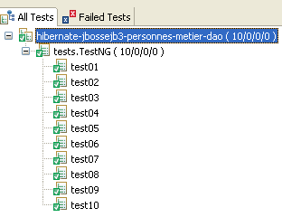
3.2.8. تغيير نظام إدارة قواعد البيانات (DBMS)
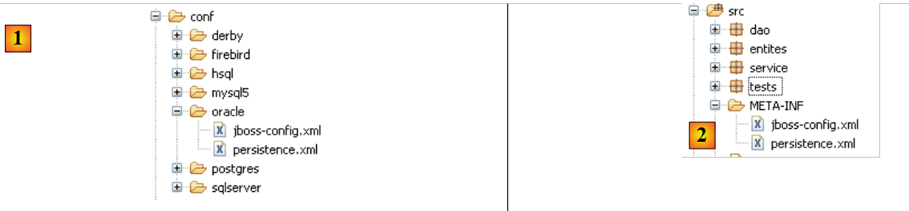 |
لتغيير نظام إدارة قواعد البيانات (DBMS)، ما عليك سوى استبدال محتويات المجلد [META-INF] [2] بمحتويات المجلد DBMS الموجود في المجلد [conf] [1]. لنأخذ SQL Server كمثال:
ملف [persistence.xml] هو كما يلي:
<persistence xmlns="http://java.sun.com/xml/ns/persistence" xmlns:xsi="http://www.w3.org/2001/XMLSchema-instance"
xsi:schemaLocation="http://java.sun.com/xml/ns/persistence
http://java.sun.com/xml/ns/persistence/persistence_1_0.xsd" version="1.0">
<persistence-unit name="jpa">
<!-- the JPA provider is Hibernate -->
<provider>org.hibernate.ejb.HibernatePersistence</provider>
<!-- the DataSource JTA managed by the Java EE5 environment -->
<jta-data-source>java:/datasource</jta-data-source>
<properties>
<!-- search for JBA layer entities -->
<property name="hibernate.archive.autodetection" value="class, hbm" />
<!-- logs SQL Hibernate
<property name="hibernate.show_sql" value="true"/>
<property name="hibernate.format_sql" value="true"/>
<property name="use_sql_comments" value="true"/>
-->
<!-- the type of SGBD managed -->
<property name="hibernate.dialect" value="org.hibernate.dialect.SQLServerDialect" />
<!-- recreate all tables (drop+create) when the persistence unit is deployed -->
<property name="hibernate.hbm2ddl.auto" value="create" />
</properties>
</persistence-unit>
</persistence>
لم يتغير سوى سطر واحد:
- السطر 24: لهجة SQL التي يجب أن يستخدمها Hibernate
ملف [jboss-config.xml] لـ SQL Server هو كما يلي:
<?xml version="1.0" encoding="UTF-8"?>
<deployment xmlns:xsi="http://www.w3.org/2001/XMLSchema-instance" xsi:schemaLocation="urn:jboss:bean-deployer bean-deployer_1_0.xsd"
xmlns="urn:jboss:bean-deployer:2.0">
<!-- factory of the DataSource -->
<bean name="datasourceFactory" class="org.jboss.resource.adapter.jdbc.local.LocalTxDataSource">
<!-- name JNDI of DataSource -->
<property name="jndiName">java:/datasource</property>
<!-- managed database -->
<property name="driverClass">com.microsoft.sqlserver.jdbc.SQLServerDriver</property>
<property name="connectionURL">jdbc:sqlserver://localhost\\SQLEXPRESS:1246;databaseName=jpa</property>
<property name="userName">jpa</property>
<property name="password">jpa</property>
<!-- properties connection pool -->
...
</bean>
</deployment>
تم تغيير الأسطر 12–15 فقط: فهي تحدد خصائص اتصال JDBC الجديد.
يُنصح القراء بتكرار الاختبارات الموصوفة لـ MySQL5 مع أنظمة إدارة قواعد البيانات الأخرى.
3.2.9. تغيير تنفيذ JPA
كما ذكرنا أعلاه، لم نجد أي أمثلة على استخدام حاوية JBoss EJB3 مع TopLink. حتى وقت كتابة هذا المقال (يونيو 2007)، ما زلت لا أعرف ما إذا كان هذا التكوين ممكنًا أم لا.
3.3. أمثلة أخرى
دعونا نلخص ما تم إنجازه فيما يتعلق بكيان "Person". لقد أنشأنا ثلاث بنى لتشغيل نفس الاختبارات:
1 - تطبيق Spring/Hibernate
 |
2 - تطبيق Spring/TopLink
 |
3 - تطبيق JBoss EJB3 / Hibernate
 |
تستخدم الأمثلة الواردة في البرنامج التعليمي هذه البنى الثلاث إلى جانب الكيانات الأخرى التي تمت تغطيتها في الجزء الأول من البرنامج التعليمي:
الفئة - المقالة
 |
- في [1]: إصدار Spring/Hibernate
- في [2]: إصدار Spring / Toplink
- في [3]: إصدار JBoss EJB3 / Hibernate
الشخص - العنوان - النشاط
 |
- في [1]: إصدار Spring/Hibernate
- في [2]: إصدار Spring/Toplink
- في [3]: إصدار JBoss EJB3 / Hibernate
لا تقدم هذه الأمثلة أي مفاهيم معمارية جديدة. إنها تنطبق ببساطة على سيناريو حيث توجد كيانات متعددة لإدارتها، مع علاقات واحد إلى العديد أو العديد إلى العديد بينها — وهو أمر لم تتضمنه الأمثلة التي استخدمت كيان Person.
3.4. المثال 3: Spring / JPA في تطبيق ويب
3.4.1. نظرة عامة
هنا نعيد النظر في تطبيق تم عرضه في الوثيقة التالية:
[ref4]: أساسيات تطوير الويب باستخدام نموذج MVC في Java [http://tahe.developpez.com/java/baseswebmvc/].
يقدم هذا المستند أساسيات تطوير الويب باستخدام نموذج MVC في Java. لفهم المثال التالي، يجب أن يكون القارئ على دراية بهذه الأساسيات. سيستخدم تطبيق الويب خادم Tomcat. يرد وصف تثبيته واستخدامه داخل Eclipse في القسم 5.3.
تم تطوير التطبيق في الأصل باستخدام طبقة [DAO] تستند إلى أداة iBatis/SQLMap [http://ibatis.apache.org/]، التي كانت تتولى عملية التعيين من العلاقات إلى الكائنات. سنقوم ببساطة باستبدال iBatis بـ JPA. ستكون بنية التطبيق كما يلي:
 |
سيسمح لنا التطبيق الويب الذي سنقوم بكتابته بإدارة مجموعة من الأشخاص باستخدام أربع عمليات:
- قائمة الأشخاص في المجموعة
- إضافة شخص إلى المجموعة
- تعديل شخص في المجموعة
- إزالة شخص من المجموعة
هذه العمليات الأساسية الأربع شائعة في جدول قاعدة البيانات. تُظهر الشاشات التالية الصفحات التي يعرضها التطبيق للمستخدم.
 |
 |
 |
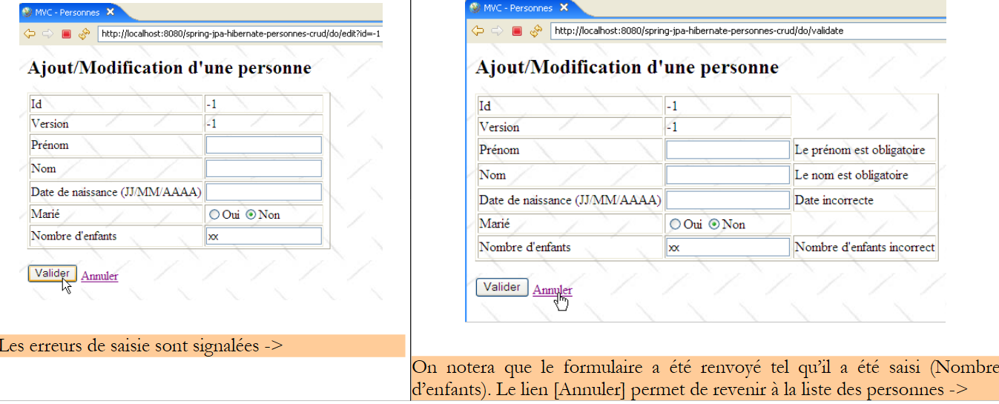 |
 |
3.4.2. مشروع Eclipse
مشروع Eclipse الخاص بالتطبيق هو كما يلي:
 |
- في [1]: مشروع الويب. هذا مشروع Eclipse من نوع [مشروع الويب الديناميكي] [2]. يمكن العثور عليه في [4] في المجلد [3] الخاص بأمثلة البرنامج التعليمي. سنقوم باستيراده.
 |
- في [5]: المصادر وتكوين طبقات [service، dao، jpa]. نحتفظ بالمكونات [dao، entities، service] الموجودة من مشروع Eclipse [hibernate-spring-people-business-dao] الذي تمت مناقشته في القسم 3.1.1. نحن نطور فقط طبقة [web]، الممثلة هنا بحزمة [web]. علاوة على ذلك، نحتفظ بملفات التكوين [persistence.xml، spring-config.xml] من ذلك المشروع، باستثناء أننا سنستخدم نظام إدارة قواعد البيانات Postgres، مما يؤدي إلى التغييرات التالية في [spring-config.xml]:
<?xml version="1.0" encoding="UTF-8"?>
<beans xmlns="http://www.springframework.org/schema/beans"
...
<bean id="entityManagerFactory" class="org.springframework.orm.jpa.LocalContainerEntityManagerFactoryBean">
<property name="dataSource" ref="dataSource" />
<property name="jpaVendorAdapter">
...
<property name="databasePlatform" value="org.hibernate.dialect.PostgreSQLDialect" />
...
</property>
...
</bean>
<!-- data source DBCP -->
<bean id="dataSource" class="org.apache.commons.dbcp.BasicDataSource" destroy-method="close">
<property name="driverClassName" value="org.postgresql.Driver" />
<property name="url" value="jdbc:postgresql:jpa" />
<property name="username" value="jpa" />
<property name="password" value="jpa" />
</bean>
....
</beans>
تم تعديل الأسطر 8 و16–19 لتناسب Postgres.
- في [6]: يحتوي المجلد [WebContent] على صفحات JSP الخاصة بالمشروع بالإضافة إلى المكتبات الضرورية. وهذه مدرجة في [8]
- يمكن استخدام التطبيق مع أنظمة إدارة قواعد البيانات المختلفة. ما عليك سوى تعديل ملف [spring-config.xml]. يحتوي المجلد [conf] [7] على ملف [spring-config.xml] المعدل ليناسب أنظمة إدارة قواعد البيانات المختلفة.
3.4.3. طبقة [web]
يتميز تطبيقنا بالبنية متعددة الطبقات التالية:
 |
ستوفر طبقة [الويب] شاشات للمستخدم لتمكينه من إدارة مجموعة الأشخاص:
- قائمة الأشخاص في المجموعة
- إضافة شخص إلى المجموعة
- تحرير معلومات شخص في المجموعة
- إزالة شخص من المجموعة
للقيام بذلك، سيعتمد على طبقة [service]، والتي بدورها ستستدعي طبقة [DAO]. لقد قدمنا بالفعل الشاشات التي تديرها طبقة [web] (القسم 3.4.1). لوصف طبقة الويب، سنقدم ما يلي بالترتيب:
- تكوينها
- طرق العرض الخاصة بها
- وحدة التحكم
- بعض الاختبارات
3.4.3.1. تكوين تطبيق الويب
دعونا نلقي نظرة على بنية مشروع Eclipse:
 | 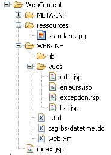 |
- في الحزمة [web]، نجد وحدة التحكم في التطبيق الويب: فئة [Application].
- توجد صفحات JSP/JSTL الخاصة بالتطبيق في [WEB-INF/views].
- يحتوي المجلد [WEB-INF/lib] على المكتبات الخارجية التي يتطلبها التطبيق. وهي مرئية في مجلد [Web App Libraries].
[web.xml]
ملف [web.xml] هو الملف الذي يستخدمه خادم الويب لتحميل التطبيق. ومحتوياته هي كما يلي:
<?xml version="1.0" encoding="UTF-8"?>
<web-app id="WebApp_ID" version="2.4" xmlns="http://java.sun.com/xml/ns/j2ee" xmlns:xsi="http://www.w3.org/2001/XMLSchema-instance"
xsi:schemaLocation="http://java.sun.com/xml/ns/j2ee http://java.sun.com/xml/ns/j2ee/web-app_2_4.xsd">
<display-name>spring-jpa-hibernate-personnes-crud</display-name>
<!-- ServletPersonne -->
<servlet>
<servlet-name>personnes</servlet-name>
<servlet-class>web.Application</servlet-class>
<init-param>
<param-name>urlEdit</param-name>
<param-value>/WEB-INF/vues/edit.jsp</param-value>
</init-param>
<init-param>
<param-name>urlErreurs</param-name>
<param-value>/WEB-INF/vues/erreurs.jsp</param-value>
</init-param>
<init-param>
<param-name>urlList</param-name>
<param-value>/WEB-INF/vues/list.jsp</param-value>
</init-param>
</servlet>
<!-- Mapping ServletPersonne-->
<servlet-mapping>
<servlet-name>personnes</servlet-name>
<url-pattern>/do/*</url-pattern>
</servlet-mapping>
<!-- welcome files -->
<welcome-file-list>
<welcome-file>index.jsp</welcome-file>
</welcome-file-list>
<!-- Unexpected error page -->
<error-page>
<exception-type>java.lang.Exception</exception-type>
<location>/WEB-INF/vues/exception.jsp</location>
</error-page>
</web-app>
- الأسطر 23-26: سيتم التعامل مع عناوين URL [/do/*] بواسطة سيرفلت [people]
- السطور 7-8: خدمة [personnes] هي مثيل لفئة [Application]، وهي فئة سنقوم بإنشائها.
- الأسطر 9-20: تعريف ثلاثة معلمات [urlList، urlEdit، urlErrors] تحدد عناوين URL لصفحات JSP لعروض [list، edit، errors].
- الأسطر 28-30: يحتوي التطبيق على صفحة دخول افتراضية [index.jsp] موجودة في جذر مجلد تطبيق الويب.
- الأسطر 32–35: يحتوي التطبيق على صفحة خطأ افتراضية يتم عرضها عندما يواجه خادم الويب استثناءً لا يعالجه التطبيق.
- السطر 37: تحدد العلامة <exception-type> نوع الاستثناء الذي تعالجه توجيهات <error-page>؛ وهنا، يكون النوع هو [java.lang.Exception] وأنواعه الفرعية، مما يعني جميع الاستثناءات.
- السطر 38: تحدد علامة <location> صفحة JSP التي سيتم عرضها عند حدوث استثناء من النوع المحدد بواسطة <exception-type>. يتوفر الاستثناء الذي حدث في هذه الصفحة في كائن باسم exception إذا كانت الصفحة تحتوي على التوجيه:
<%@ page isErrorPage="true" %>
- (تابع)
- إذا حدد <exception-type> النوع T1 وتم تمرير استثناء من النوع T2 (غير مشتق من T1) إلى خادم الويب، فإن الخادم يرسل إلى العميل صفحة استثناء خاصة، والتي عادةً ما تكون غير سهلة الاستخدام. ومن هنا تأتي أهمية علامة <error-page> في ملف [web.xml].
[index.jsp]
يتم عرض هذه الصفحة إذا طلب المستخدم سياق التطبيق مباشرةً دون تحديد عنوان URL، أي هنا [/spring-jpa-hibernate-personnes-crud]. ومحتواها كما يلي:
<%@ page language="java" pageEncoding="ISO-8859-1" contentType="text/html;charset=ISO-8859-1"%>
<%@ taglib uri="/WEB-INF/c.tld" prefix="c" %>
<c:redirect url="/do/list"/>
[index.jsp] يعيد توجيه (السطر 4) العميل إلى عنوان URL [/do/list]. يعرض عنوان URL هذا قائمة بالأشخاص الموجودين في المجموعة.
3.4.3.2. صفحات JSP/JSTL الخاصة بالتطبيق
يُستخدم لعرض قائمة الأشخاص:

ورمزه كما يلي:
<%@ page language="java" pageEncoding="ISO-8859-1" contentType="text/html;charset=ISO-8859-1"%>
<%@ taglib uri="/WEB-INF/c.tld" prefix="c" %>
<%@ taglib uri="/WEB-INF/taglibs-datetime.tld" prefix="dt" %>
<html>
<head>
<title>MVC - Personnes</title>
</head>
<body background="<c:url value="/ressources/standard.jpg"/>">
<c:if test="${erreurs!=null}">
<h3>Les erreurs suivantes se sont produites :</h3>
<ul>
<c:forEach items="${erreurs}" var="erreur">
<li><c:out value="${erreur}"/></li>
</c:forEach>
</ul>
<hr>
</c:if>
<h2>Liste des personnes</h2>
<table border="1">
<tr>
<th>Id</th>
<th>Version</th>
<th>Prénom</th>
<th>Nom</th>
<th>Date de naissance</th>
<th>Marié</th>
<th>Nombre d'enfants</th>
<th></th>
</tr>
<c:forEach var="personne" items="${personnes}">
<tr>
<td><c:out value="${personne.id}"/></td>
<td><c:out value="${personne.version}"/></td>
<td><c:out value="${personne.prenom}"/></td>
<td><c:out value="${personne.nom}"/></td>
<td><dt:format pattern="dd/MM/yyyy">${personne.datenaissance.time}</dt:format></td>
<td><c:out value="${personne.marie}"/></td>
<td><c:out value="${personne.nbenfants}"/></td>
<td><a href="<c:url value="/do/edit?id=${personne.id}"/>">Modifier</a></td>
<td><a href="<c:url value="/do/delete?id=${personne.id}"/>">Supprimer</a></td>
</tr>
</c:forEach>
</table>
<br>
<a href="<c:url value="/do/edit?id=-1"/>">Ajout</a>
</body>
</html>
- تتلقى هذه العرضة عنصرين في نموذجها:
- عنصر [people] المرتبط بـ [List] من كائنات [Person]: قائمة بالأشخاص.
- العنصر الاختياري [errors] المرتبط بـ [List] من كائنات [String]: قائمة برسائل الخطأ.
- الأسطر 31–43: نقوم بالتكرار عبر قائمة ${people} لعرض جدول HTML يحتوي على الأشخاص في المجموعة.
- السطر 40: يتم تعيين عنوان URL الذي يشير إليه الرابط [Edit] باستخدام حقل [id] للشخص الحالي بحيث يعرف وحدة التحكم المرتبطة بعنوان URL [/do/edit] الشخص الذي يجب تعديله.
- السطر 41: يتم إجراء الأمر نفسه بالنسبة لرابط [Delete].
- السطر 37: لعرض تاريخ ميلاد الشخص بتنسيق DD/MM/YYYY، نستخدم العلامة <dt> من مكتبة العلامات [DateTime] لمشروع Apache [Jakarta Taglibs]:

يتم تعريف ملف الوصف لمكتبة العلامات هذه في السطر 3.
- السطر 46: يستهدف رابط [Add] لإضافة شخص جديد عنوان URL [/do/edit]، تمامًا مثل رابط [Edit] في السطر 40. تشير القيمة -1 للمعلمة [id] إلى أن هذه عملية إضافة وليست عملية تعديل.
- الأسطر 10–18: إذا كان العنصر ${errors} موجودًا في القالب، فسيتم عرض رسائل الخطأ التي يحتوي عليها.
تُستخدم لعرض النموذج الخاص بإضافة شخص جديد أو تعديل شخص موجود:
 |
فيما يلي كود عرض [edit.jsp]:
<%@ page language="java" pageEncoding="ISO-8859-1" contentType="text/html;charset=ISO-8859-1"%>
<%@ taglib uri="/WEB-INF/c.tld" prefix="c" %>
<%@ taglib uri="/WEB-INF/taglibs-datetime.tld" prefix="dt" %>
<html>
<head>
<title>MVC - Personnes</title>
</head>
<body background="../ressources/standard.jpg">
<h2>Ajout/Modification d'une personne</h2>
<c:if test="${erreurEdit!=''}">
<h3>Echec de la mise à jour :</h3>
L'erreur suivante s'est produite : ${erreurEdit}
<hr>
</c:if>
<form method="post" action="<c:url value="/do/validate"/>">
<table border="1">
<tr>
<td>Id</td>
<td>${id}</td>
</tr>
<tr>
<td>Version</td>
<td>${version}</td>
</tr>
<tr>
<td>Prénom</td>
<td>
<input type="text" value="${prenom}" name="prenom" size="20">
</td>
<td>${erreurPrenom}</td>
</tr>
<tr>
<td>Nom</td>
<td>
<input type="text" value="${nom}" name="nom" size="20">
</td>
<td>${erreurNom}</td>
</tr>
<tr>
<td>Date de naissance (JJ/MM/AAAA)</td>
<td>
<input type="text" value="${datenaissance}" name="datenaissance">
</td>
<td>${erreurDateNaissance}</td>
</tr>
<tr>
<td>Marié</td>
<td>
<c:choose>
<c:when test="${marie}">
<input type="radio" name="marie" value="true" checked>Oui
<input type="radio" name="marie" value="false">Non
</c:when>
<c:otherwise>
<input type="radio" name="marie" value="true">Oui
<input type="radio" name="marie" value="false" checked>Non
</c:otherwise>
</c:choose>
</td>
</tr>
<tr>
<td>Nombre d'enfants</td>
<td>
<input type="text" value="${nbenfants}" name="nbenfants">
</td>
<td>${erreurNbEnfants}</td>
</tr>
</table>
<br>
<input type="hidden" value="${id}" name="id">
<input type="hidden" value="${version}" name="version">
<input type="submit" value="Valider">
<a href="<c:url value="/do/list"/>">Annuler</a>
</form>
</body>
</html>
تعرض هذه الصفحة نموذجًا لإضافة شخص جديد أو تحديث شخص موجود. من الآن فصاعدًا، لتبسيط النص، سنستخدم مصطلحًا واحدًا هو [تحديث]. يؤدي زر [Submit] (السطر 73) إلى إرسال طلب POST إلى عنوان URL [/do/validate] (السطر 16). إذا فشل طلب POST، يتم إعادة عرض طريقة العرض [edit.jsp] مع الأخطاء التي حدثت؛ وإلا، يتم عرض طريقة العرض [list.jsp].
- تستقبل طريقة العرض [edit.jsp]، التي يتم عرضها في كل من طلب GET وطلب POST الفاشل، العناصر التالية في نموذجها:
السمة | GET | POST |
معرف الشخص الذي يتم التحديث | نفس | |
إصداره | نفس | |
الاسم الأول | الاسم الأول الذي تم إدخاله | |
اللقب | تم إدخال الاسم الأخير | |
تاريخ ميلاده | تم إدخال تاريخ الميلاد | |
الحالة الاجتماعية | الحالة الاجتماعية | |
عدد الأطفال | عدد الأطفال المدخلين | |
فارغ | رسالة خطأ تشير إلى أن الإضافة أو التعديل في وقت إرسال POST بواسطة زر [إرسال]. فارغ في حالة عدم وجود خطأ. | |
فارغ | يشير إلى اسم أول غير صحيح – فارغ في الحالات الأخرى | |
فارغ | يشير إلى اسم عائلة غير صحيح – فارغ في الحالات الأخرى | |
فارغ | يشير إلى تاريخ ميلاد غير صحيح – فارغ في الحالات الأخرى | |
فارغ | يشير إلى عدد غير صحيح للأطفال – فارغ في الحالات الأخرى |
- الأسطر 11-15: إذا فشل إرسال النموذج (POST)، فسيتم إرجاع [errorEdit!=''] وسيتم عرض رسالة خطأ.
- السطر 16: سيتم إرسال النموذج إلى عنوان URL [/do/validate]
- السطر 20: يتم عرض عنصر [id] في القالب
- السطر 24: يتم عرض عنصر [version] من القالب
- الأسطر 26-32: إدخال الاسم الأول للشخص:
- عند عرض النموذج لأول مرة (GET)، يعرض ${firstName} القيمة الحالية لحقل [firstName] في كائن [Person] المحدث، ويكون ${firstNameError} فارغًا.
- في حالة حدوث خطأ بعد POST، يتم عرض القيمة المدخلة ${firstName} مرة أخرى، إلى جانب أي رسالة خطأ ${firstNameError}
- الأسطر 33-39: إدخال اسم العائلة للشخص
- الأسطر 40–46: إدخال تاريخ ميلاد الشخص
- الأسطر 47–61: إدخال الحالة الاجتماعية للشخص باستخدام زر اختيار. تُستخدم قيمة حقل [married] في كائن [Person] لتحديد أي من زري الاختيار يجب تحديده.
- الأسطر 62-68: إدخال عدد أطفال الشخص
- السطر 71: حقل HTML مخفي باسم [id] بقيمة تساوي حقل [id] للشخص الذي يتم تحديثه، -1 للإضافة، أو قيمة أخرى للتعديل.
- السطر 72: حقل HTML مخفي باسم [version] بقيمة تساوي حقل [id] للشخص الذي يتم تحديثه.
- السطر 73: زر [إرسال] الخاص بالنموذج
- السطر 74: رابط للعودة إلى قائمة الأشخاص. يحمل اسم [Cancel] لأنه يسمح لك بالخروج من النموذج دون إرساله.
الصفحة [ exception.jsp]
تُستخدم هذه الصفحة لعرض رسالة تشير إلى حدوث استثناء لم يتم التعامل معه من قبل التطبيق وتم تمريره إلى خادم الويب. على سبيل المثال، دعونا نحذف شخصًا غير موجود في المجموعة:
 |
<%@ page language="java" pageEncoding="ISO-8859-1" contentType="text/html;charset=ISO-8859-1"%>
<%@ taglib uri="/WEB-INF/c.tld" prefix="c" %>
<%@ page isErrorPage="true" %>
<%
response.setStatus(200);
%>
<html>
<head>
<title>MVC - Personnes</title>
</head>
<body background="<c:url value="/ressources/standard.jpg"/>">
<h2>MVC - personnes</h2>
L'exception suivante s'est produite :
<%= exception.getMessage()%>
<br><br>
<a href="<c:url value="/do/list"/>">Retour à la liste</a>
</body>
</html>
- تتلقى هذه العرضة مفتاحًا في قالبها، وهو عنصر [exception]، الذي يمثل الاستثناء الذي اعترضه خادم الويب. لكي يقوم خادم الويب بتضمين هذا العنصر في قالب صفحة JSP، يجب أن تكون الصفحة قد عرّفت العلامة في السطر 3.
- السطر 6: تم تعيين رمز حالة HTTP للاستجابة على 200. هذا هو رأس HTTP الأول في الاستجابة. يُعلم الرمز 200 العميل بأن طلبه قد تم تلبيته. بشكل عام، يتم تضمين مستند HTML في استجابة الخادم. وهذا هو الحال هنا. إذا لم يتم تعيين رمز حالة HTTP للاستجابة على 200، فسيكون له القيمة 500 هنا، مما يعني حدوث خطأ. في الواقع، عندما يعترض خادم الويب استثناءً لم يتم معالجته، فإنه يعتبر ذلك حالة غير طبيعية ويشير إليها برمز 500. يختلف الرد على رمز HTTP 500 باختلاف المتصفح: يعرض Firefox مستند HTML الذي قد يصاحب هذا الرد، بينما يتجاهل IE هذا المستند ويعرض صفحته الخاصة. لهذا السبب استبدلنا الرمز 500 بالرمز 200.
- السطر 16: يتم عرض نص الاستثناء
- السطر 18: يُعرض على المستخدم رابط للعودة إلى قائمة الأشخاص
عرض [ -errors .jsp]
يُستخدم لعرض صفحة تُبلغ عن أخطاء تهيئة التطبيق، أي الأخطاء التي تم اكتشافها أثناء تنفيذ طريقة [init] لبرنامج خدمة التحكم. قد يكون ذلك، على سبيل المثال، عدم وجود معلمة في ملف [web.xml]، كما هو موضح في المثال أدناه:
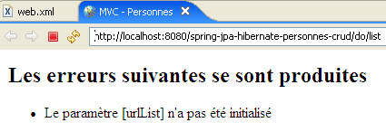
فيما يلي كود صفحة [errors.jsp]:
<%@ page language="java" contentType="text/html; charset=ISO-8859-1"
pageEncoding="ISO-8859-1"%>
<!DOCTYPE HTML PUBLIC "-//W3C//DTD HTML 4.01 Transitional//EN">
<%@ taglib uri="/WEB-INF/c.tld" prefix="c" %>
<html>
<head>
<title>MVC - Personnes</title>
</head>
<body>
<h2>Les erreurs suivantes se sont produites</h2>
<ul>
<c:forEach var="erreur" items="${erreurs}">
<li>${erreur}</li>
</c:forEach>
</ul>
</body>
</html>
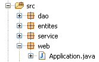
ture هيكل وبدء تشغيل وحدة التحكم
هيكل وحدة التحكم [Application] هو كما يلي:
package web;
...
@SuppressWarnings("serial")
public class Application extends HttpServlet {
// instance parameters
private String urlErreurs = null;
private ArrayList erreursInitialisation = new ArrayList<String>();
private String[] paramètres = { "urlList", "urlEdit", "urlErreurs" };
private Map params = new HashMap<String, String>();
// service
private IService service = null;
// init
@SuppressWarnings("unchecked")
public void init() throws ServletException {
// retrieve servlet initialization parameters
ServletConfig config = getServletConfig();
// other initialization parameters are processed
String valeur = null;
for (int i = 0; i < paramètres.length; i++) {
// parameter value
valeur = config.getInitParameter(paramètres[i]);
// present parameter?
if (valeur == null) {
// we note the error
erreursInitialisation.add("Le paramètre [" + paramètres[i] + "] n'a pas été initialisé");
} else {
// parameter value is stored
params.put(paramètres[i], valeur);
}
}
// the [errors] view url has a special treatment
urlErreurs = config.getInitParameter("urlErreurs");
if (urlErreurs == null)
throw new ServletException("Le paramètre [urlErreurs] n'a pas été initialisé");
// application configuration
ApplicationContext ctx = new ClassPathXmlApplicationContext("spring-config.xml");
// service layer
service = (IService) ctx.getBean("service");
// empty the base
clean();
// fill it
try {
fill();
} catch (ParseException e) {
throw new ServletException(e);
}
}
// table filling
public void fill() throws ParseException {
// creating people
Personne p1 = new Personne("p1", "Paul", new SimpleDateFormat("dd/MM/yy").parse("31/01/2000"), true, 2);
Personne p2 = new Personne("p2", "Sylvie", new SimpleDateFormat("dd/MM/yy").parse("05/07/2001"), false, 0);
// we save
service.saveArray(new Personne[] { p1, p2 });
}
// deleting table items
public void clean() {
for (Personne p : service.getAll()) {
service.deleteOne(p.getId());
}
}
// GET
@SuppressWarnings("unchecked")
public void doGet(HttpServletRequest request, HttpServletResponse response) throws IOException, ServletException {
...
}
// display list of persons
private void doListPersonnes(HttpServletRequest request, HttpServletResponse response) throws ServletException, IOException {
...
}
// modify / add a person
private void doEditPersonne(HttpServletRequest request, HttpServletResponse response) throws ServletException, IOException {
...
}
// deleting a person
private void doDeletePersonne(HttpServletRequest request, HttpServletResponse response) throws ServletException, IOException {
...
}
// validation modification / addition of a person
public void doValidatePersonne(HttpServletRequest request, HttpServletResponse response) throws ServletException, IOException {
...
}
// display pre-filled form
private void showFormulaire(HttpServletRequest request, HttpServletResponse response, String erreurEdit) throws ServletException, IOException {
...
}
// post
public void doPost(HttpServletRequest request, HttpServletResponse response) throws IOException, ServletException {
// we hand over to GET
doGet(request, response);
}
}
- الأسطر 21–34: نسترد المعلمات المحددة في ملف [web.xml].
- الأسطر 37-39: يجب أن تكون المعلمة [urlErrors] موجودة لأنها تحدد عنوان URL لعرض [errors] القادر على عرض أي أخطاء في التهيئة. إذا لم تكن موجودة، يتم إنهاء التطبيق عن طريق إلقاء استثناء [ServletException] (السطر 39). سيتم نشر هذا الاستثناء إلى خادم الويب ومعالجته بواسطة العلامة <error-page> في ملف [web.xml]. وبالتالي يتم عرض عرض [exception.jsp]:
 رابط [العودة إلى القائمة] أعلاه غير نشط. يؤدي النقر عليه إلى ظهور نفس الاستجابة ما دامت التطبيق لم يتم تعديله وإعادة تحميله. وهو مفيد في حالات الاستثناءات الأخرى، كما رأينا سابقًا.
رابط [العودة إلى القائمة] أعلاه غير نشط. يؤدي النقر عليه إلى ظهور نفس الاستجابة ما دامت التطبيق لم يتم تعديله وإعادة تحميله. وهو مفيد في حالات الاستثناءات الأخرى، كما رأينا سابقًا.
- الأسطر 40–43: استخدم ملف تكوين Spring لاسترداد مرجع إلى طبقة [service]. بعد تهيئة وحدة التحكم، تحتوي طرقها على مرجع [service] إلى طبقة [service] (السطر 15) الذي ستستخدمه لتنفيذ الإجراءات التي يطلبها المستخدم. سيتم اعتراض هذه الإجراءات بواسطة الطريقة [doGet]، والتي ستقوم بمعالجتها بواسطة طريقة محددة في وحدة التحكم:
Url | طريقة HTTP | طريقة وحدة التحكم |
GET | doListPeople | |
GET | doEditPerson | |
POST | doValidatePerson | |
GET | doDeletePerson |
طريقة [doGet]
الغرض من هذه الطريقة هو توجيه معالجة الإجراءات التي يطلبها المستخدم إلى الطريقة الصحيحة. وفيما يلي كودها:
// GET
@SuppressWarnings("unchecked")
public void doGet(HttpServletRequest request, HttpServletResponse response) throws IOException, ServletException {
// check how the servlet was initialized
if (erreursInitialisation.size() != 0) {
// we hand over to the error page
request.setAttribute("erreurs", erreursInitialisation);
getServletContext().getRequestDispatcher(urlErreurs).forward(request, response);
// end
return;
}
// retrieve the request sending method
String méthode = request.getMethod().toLowerCase();
// retrieve the action to be executed
String action = request.getPathInfo();
// action?
if (action == null) {
action = "/list";
}
// execution action
if (méthode.equals("get") && action.equals("/list")) {
// list of persons
doListPersonnes(request, response);
return;
}
if (méthode.equals("get") && action.equals("/delete")) {
// deleting a person
doDeletePersonne(request, response);
return;
}
if (méthode.equals("get") && action.equals("/edit")) {
// presentation form add / modify a person
doEditPersonne(request, response);
return;
}
if (méthode.equals("post") && action.equals("/validate")) {
// validation form add / modify a person
doValidatePersonne(request, response);
return;
}
// other cases
doListPersonnes(request, response);
}
- الأسطر 7–13: نتحقق من أن قائمة أخطاء التهيئة فارغة. إذا لم تكن كذلك، نعرض طريقة العرض [errors(errors)]، والتي ستبلغ عن الخطأ (الأخطاء).
- السطر 15: نسترد طريقة [get] أو [post] التي استخدمها العميل لإجراء الطلب.
- السطر 17: نسترد قيمة المعلمة [action] من الطلب.
- الأسطر 23–27: معالجة طلب [GET /do/list]، الذي يطلب قائمة الأشخاص.
- الأسطر 28–32: معالجة طلب [GET /do/delete]، الذي يطلب حذف شخص.
- الأسطر 33-37: معالجة طلب [GET /do/edit]، الذي يطلب النموذج لتحديث شخص.
- الأسطر 38–42: معالجة طلب [POST /do/validate]، الذي يطلب التحقق من صحة الشخص الذي تم تحديثه.
- السطر 44: إذا لم يكن الإجراء المطلوب أحد الإجراءات الخمسة السابقة، فإننا نتعامل معه كما لو كان [GET /do/list].
طريقة [doListPersonnes]
تتعامل هذه الطريقة مع طلب [GET /do/list]، الذي يطلب قائمة الأشخاص:
وإليك كودها:
// display list of persons
private void doListPersonnes(HttpServletRequest request, HttpServletResponse response) throws ServletException, IOException {
// the [list] view model
request.setAttribute("personnes", service.getAll());
// list] view display
getServletContext().getRequestDispatcher((String) params.get("urlList")).forward(request, response);
}
- السطر 4: نطلب قائمة الأشخاص في المجموعة من طبقة [service] ونخزنها في النموذج تحت المفتاح "people".
- السطر 6: يتم عرض طريقة العرض [list.jsp] الموضحة في القسم 3.4.3.2.
طريقة [doDeletePerson]
تتعامل هذه الطريقة مع طلب [GET /do/delete?id=XX]، الذي يطلب حذف الشخص ذي المعرف id=XX. عنوان URL [/do/delete?id=XX] هو عنوان روابط [Delete] في عرض [list.jsp]:
 والذي يكون كوده كما يلي:
والذي يكون كوده كما يلي:
...
<html>
<head>
<title>MVC - Personnes</title>
</head>
<body background="<c:url value="/ressources/standard.jpg"/>">
...
<c:forEach var="personne" items="${personnes}">
<tr>
...
<td><a href="<c:url value="/do/edit?id=${personne.id}"/>">Modifier</a></td>
<td><a href="<c:url value="/do/delete?id=${personne.id}"/>">Supprimer</a></td>
</tr>
</c:forEach>
</table>
<br>
<a href="<c:url value="/do/edit?id=-1"/>">Ajout</a>
</body>
</html>
// deleting a person
private void doDeletePersonne(HttpServletRequest request, HttpServletResponse response) throws ServletException, IOException {
// retrieve the person's id
int id = Integer.parseInt(request.getParameter("id"));
// we delete the person
service.deleteOne(id);
// redirects to the list of persons
response.sendRedirect("list");
}
- السطر 4: عنوان URL الذي تتم معالجته هو [/do/delete?id=XX]. نسترد القيمة [XX] من المعلمة [id].
- السطر 6: نطلب من طبقة [service] حذف الشخص الذي يحمل المعرف الذي تم الحصول عليه. لا نقوم بأي عملية تحقق من الصحة. إذا كان الشخص الذي نحاول حذفه غير موجود، فإن طبقة [dao] ترمي استثناءً ينتقل إلى طبقة [service]. ولا نتعامل معه هنا في وحدة التحكم أيضًا. وبالتالي سينتقل إلى خادم الويب، الذي سيعرض، حسب التكوين، صفحة [exception.jsp]، الموصوفة في القسم 3.4.3.2:

- السطر 9: إذا نجح الحذف (لم تحدث استثناءات)، يتم إعادة توجيه العميل إلى عنوان URL النسبي [list]. وبما أن عنوان URL الذي تمت معالجته للتو كان [/do/delete]، فإن عنوان URL لإعادة التوجيه سيكون [/do/list]. وبالتالي، سيقوم المتصفح بتنفيذ طلب [GET /do/list]، والذي سيعرض قائمة الأشخاص.
طريقة [doEditPerson]
تتعامل هذه الطريقة مع الطلب [GET /do/edit?id=XX]، الذي يسترد النموذج الخاص بتحديث الشخص ذي المعرف id=XX. يتم استخدام عنوان URL [/do/edit?id=XX] للرابطين [Edit] و [Add] في عرض [list.jsp]:
 والذي يكون كوده كما يلي:
والذي يكون كوده كما يلي:
...
<html>
<head>
<title>MVC - Personnes</title>
</head>
<body background="<c:url value="/ressources/standard.jpg"/>">
...
<c:forEach var="personne" items="${personnes}">
<tr>
...
<td><a href="<c:url value="/do/edit?id=${personne.id}"/>">Modifier</a></td>
<td><a href="<c:url value="/do/delete?id=${personne.id}"/>">Supprimer</a></td>
</tr>
</c:forEach>
</table>
<br>
<a href="<c:url value="/do/edit?id=-1"/>">Ajout</a>
</body>
</html>
 |
- في [1] أعلاه، نموذج الإضافة، وفي [2]، نموذج التعديل.
// modify / add a person
private void doEditPersonne(HttpServletRequest request, HttpServletResponse response) throws ServletException, IOException {
// retrieve the person's id
int id = Integer.parseInt(request.getParameter("id"));
// addition or modification?
Personne personne = null;
if (id != -1) {
// modification - the person to be modified is retrieved
personne = service.getOne(id);
request.setAttribute("id", personne.getId());
request.setAttribute("version", personne.getVersion());
} else {
// add - create an empty person
personne = new Personne();
request.setAttribute("id", -1);
request.setAttribute("version", -1);
}
// we put the [Person] object in the user's session
request.getSession().setAttribute("personne", personne);
// and in the view model [edit]
request.setAttribute("erreurEdit", "");
request.setAttribute("prenom", personne.getPrenom());
request.setAttribute("nom", personne.getNom());
Date dateNaissance = personne.getDatenaissance();
if (dateNaissance != null) {
request.setAttribute("datenaissance", new SimpleDateFormat("dd/MM/yyyy").format(dateNaissance));
} else {
request.setAttribute("datenaissance", "");
}
request.setAttribute("marie", personne.isMarie());
request.setAttribute("nbenfants", personne.getNbenfants());
// view display [edit]
getServletContext().getRequestDispatcher((String) params.get("urlEdit")).forward(request, response);
}
- يستهدف طلب GET عنوان URL بالشكل [/do/edit?id=XX]. في السطر 4، نسترد قيمة [id]. ثم هناك حالتان:
- إذا لم تكن قيمة id تساوي -1، فهذا يعني أنه تحديث، وعلينا عرض نموذج مملوء مسبقًا بمعلومات الشخص المراد تحديثه. في السطر 9، يتم طلب هذا الشخص من طبقة [service].
- id يساوي -1. في هذه الحالة، يكون الأمر عبارة عن إضافة، ويجب عرض نموذج فارغ. للقيام بذلك، يتم إنشاء شخص فارغ في السطر 14.
- في كلتا الحالتين، يتم تهيئة عناصر [id، version] في قالب الصفحة [edit.jsp] الموصوف في القسم 3.4.3.2.
- يتم وضع كائن [Person] الناتج في قالب الصفحة [edit.jsp]. يتضمن هذا القالب العناصر التالية: [errorEdit, id, version, firstName, errorFirstName, lastName, errorLastName, birthDate, errorBirthDate, married, numberOfChildren, errorNumberOfChildren]. يتم تهيئة هذه العناصر في الأسطر 19–31، باستثناء تلك التي تكون قيمتها سلسلة فارغة [erreurPrenom، erreurNom، erreurDateNaissance، erreurNbEnfants]. ونعلم أنه في حالة غيابها عن القالب، ستعرض مكتبة JSTL سلسلة فارغة كقيمة لها. وعلى الرغم من أن عنصر [errorEdit] يحتوي أيضًا على سلسلة فارغة كقيمة له، إلا أنه يتم تهيئته لأن فحصًا يتم إجراؤه على قيمته في صفحة [edit.jsp].
- بمجرد أن يصبح النموذج جاهزًا، يتم تمرير التحكم إلى الصفحة [edit.jsp]، السطر 33، والتي ستقوم بإنشاء عرض [edit].
طريقة [doValidatePersonne]
تتعامل هذه الطريقة مع طلب [POST /do/validate]، الذي يتحقق من صحة نموذج التحديث. يتم تشغيل هذا الطلب POST بواسطة الزر [Validate]:
 دعونا نستعرض عناصر الإدخال في نموذج HTML في العرض أعلاه:
دعونا نستعرض عناصر الإدخال في نموذج HTML في العرض أعلاه:
<form method="post" action="<c:url value="/do/validate"/>">
...
<input type="text" value="${nom}" name="nom" size="20">
...
<input type="text" value="${datenaissance}" name="datenaissance">
...
<c:choose>
<c:when test="${marie}">
<input type="radio" name="marie" value="true" checked>Oui
<input type="radio" name="marie" value="false">Non
</c:when>
<c:otherwise>
<input type="radio" name="marie" value="true">Oui
<input type="radio" name="marie" value="false" checked>Non
</c:otherwise>
</c:choose>
...
<input type="text" value="${nbenfants}" name="nbenfants">
...
<input type="hidden" value="${id}" name="id">
<input type="hidden" value="${version}" name="version">
<input type="submit" value="Valider">
<a href="<c:url value="/do/list"/>">Annuler</a>
</form>
// validation modification / addition of a person
public void doValidatePersonne(HttpServletRequest request, HttpServletResponse response) throws ServletException, IOException {
// retrieve posted items
boolean formulaireErroné = false;
boolean erreur;
// first name
String prenom = request.getParameter("prenom").trim();
// valid first name?
if (prenom.length() == 0) {
// we note the error
request.setAttribute("erreurPrenom", "Le prénom est obligatoire");
formulaireErroné = true;
}
// the name
String nom = request.getParameter("nom").trim();
// valid first name?
if (nom.length() == 0) {
// we note the error
request.setAttribute("erreurNom", "Le nom est obligatoire");
formulaireErroné = true;
}
// date of birth
Date datenaissance = null;
try {
datenaissance = new SimpleDateFormat("dd/MM/yyyy").parse(request.getParameter("datenaissance").trim());
} catch (ParseException e) {
// we note the error
request.setAttribute("erreurDateNaissance", "Date incorrecte");
formulaireErroné = true;
}
// marital status
boolean marie = Boolean.parseBoolean(request.getParameter("marie").trim());
// number of children
int nbenfants = 0;
erreur = false;
try {
nbenfants = Integer.parseInt(request.getParameter("nbenfants").trim());
if (nbenfants < 0) {
erreur = true;
}
} catch (NumberFormatException ex) {
// we note the error
erreur = true;
}
// wrong number of children?
if (erreur) {
// we report the error
request.setAttribute("erreurNbEnfants", "Nombre d'enfants incorrect");
formulaireErroné = true;
}
// pERSON ID
int id = Integer.parseInt(request.getParameter("id"));
// is the form incorrect?
if (formulaireErroné) {
// redisplay the form with error messages
showFormulaire(request, response, "");
// finish
return;
}
// the form is correct - we update the person who has been placed in the session
// with information sent by the customer
Personne personne = (Personne)request.getSession().getAttribute("personne");
personne.setDatenaissance(datenaissance);
personne.setMarie(marie);
personne.setNbenfants(nbenfants);
personne.setNom(nom);
personne.setPrenom(prenom);
// persistence
try {
if (id == -1) {
// creation
service.saveOne(personne);
} else {
// update
service.updateOne(personne);
}
} catch (DaoException ex) {
// redisplay the form with the error message
showFormulaire(request, response, ex.getMessage());
// finish
return;
}
// redirects to the list of persons
response.sendRedirect("list");
}
// display pre-filled form
private void showFormulaire(HttpServletRequest request, HttpServletResponse response, String erreurEdit) throws ServletException, IOException {
// prepare the view model [edit]
request.setAttribute("erreurEdit", erreurEdit);
request.setAttribute("id", request.getParameter("id"));
request.setAttribute("version", request.getParameter("version"));
request.setAttribute("prenom", request.getParameter("prenom").trim());
request.setAttribute("nom", request.getParameter("nom").trim());
request.setAttribute("datenaissance", request.getParameter("datenaissance").trim());
request.setAttribute("marie", request.getParameter("marie"));
request.setAttribute("nbenfants", request.getParameter("nbenfants").trim());
// view display [edit]
getServletContext().getRequestDispatcher((String) params.get("urlEdit")).forward(request, response);
}
- الأسطر 7-13: يتم استرداد المعلمة [firstName] من طلب POST والتحقق من صحتها. إذا كانت غير صحيحة، يتم تهيئة العنصر [firstNameError] برسالة خطأ ووضعه في سمات الطلب.
- الأسطر 15–21: يتم اتباع نفس العملية لمعلمة [lastName]
- الأسطر 23–30: يتم تطبيق نفس العملية على المعلمة [dateOfBirth]
- السطر 32: نسترد المعلمة [marie]. لا نتحقق من صحتها لأنها، من حيث المبدأ، تأتي من قيمة زر اختيار. ومع ذلك، لا شيء يمنع برنامجًا من إرسال طلب [POST /.../do/validate] مصحوبًا بمعلمة [marie] وهمية. لذلك يجب أن نختبر صحة هذه المعلمة. هنا، نعتمد على معالجة الاستثناءات لدينا، والتي تؤدي إلى عرض صفحة [exception.jsp] إذا لم يعالج المتحكم الاستثناء بنفسه. لذلك، إذا فشل تحويل المعلمة [marie] إلى قيمة منطقية في السطر 32، فسيتم إلقاء استثناء، مما يؤدي إلى إرسال صفحة [exception.jsp] إلى العميل. هذا السلوك يناسبنا.
- الأسطر 34–50: نسترد المعلمة [nbenfants] ونتحقق من قيمتها.
- السطر 52: نسترد المعلمة [id] دون التحقق من قيمتها
- الأسطر 54-59: إذا كان النموذج غير صالح، يتم إعادة عرضه مع رسائل الخطأ التي تم إنشاؤها مسبقًا
- الأسطر 62-67: إذا كان صالحًا، نقوم بإنشاء كائن [Person] جديد باستخدام حقول النموذج
- الأسطر 69-82: يتم حفظ الشخص. قد تفشل عملية الحفظ. في بيئة متعددة المستخدمين، قد يكون الشخص المراد تعديله قد تم حذفه أو تعديله بالفعل بواسطة شخص آخر. في هذه الحالة، ستقوم طبقة [dao] بإلقاء استثناء، والذي نتعامل معه هنا.
- السطر 84: إذا لم تحدث أي استثناءات، يتم إعادة توجيه العميل إلى عنوان URL [/do/list] لعرض الحالة الجديدة للمجموعة.
- السطر 79: إذا حدث استثناء أثناء الحفظ، نطلب إعادة عرض النموذج الأولي، مع تمرير رسالة خطأ الاستثناء إليه (المعلمة الثالثة).
 سيكون [IE7] متصفح المستخدم U2. يطلب المستخدم U2 نفس عنوان URL:
سيكون [IE7] متصفح المستخدم U2. يطلب المستخدم U2 نفس عنوان URL:
 يبدأ المستخدم U1 في تعديل السجل الخاص بالشخص [p2]:
يبدأ المستخدم U1 في تعديل السجل الخاص بالشخص [p2]:
 يقوم المستخدم U2 بنفس الشيء:
يقوم المستخدم U2 بنفس الشيء:
 يقوم المستخدم U1 بإجراء تغييرات وإرسالها:
يقوم المستخدم U1 بإجراء تغييرات وإرسالها:
 |
 |
 ويجد الشخص [Lemarchand] كما عدّله U1 (متزوج، ولديه طفلان). وقد تغير رقم إصدار **p2**. والآن يقوم U2 بحذف [p2]:
ويجد الشخص [Lemarchand] كما عدّله U1 (متزوج، ولديه طفلان). وقد تغير رقم إصدار **p2**. والآن يقوم U2 بحذف [p2]:
 |
 |
 يكتشف أن [p2] لم يعد بالفعل جزءًا من القائمة...
### 3.4.5. الإصدار 2
نقوم بتعديل الإصدار السابق قليلاً لاستخدام أرشيفات طبقات [service، dao، jpa] بدلاً من شفرة المصدر الخاصة بها:
يكتشف أن [p2] لم يعد بالفعل جزءًا من القائمة...
### 3.4.5. الإصدار 2
نقوم بتعديل الإصدار السابق قليلاً لاستخدام أرشيفات طبقات [service، dao، jpa] بدلاً من شفرة المصدر الخاصة بها:
 |
- في [1]: مشروع Eclipse الجديد. لاحظ أن حزم [service، dao، entities] قد اختفت. فقد تم تغليفها في أرشيف [service-dao-jpa-personne.jar] [2] الموجود في [WEB-INF/lib].
- يوجد مجلد المشروع في [4]. سنقوم باستيراده.
 |
<?xml version="1.0" encoding="UTF-8"?>
<persistence version="1.0"
xmlns="http://java.sun.com/xml/ns/persistence"
xmlns:xsi="http://www.w3.org/2001/XMLSchema-instance"
xsi:schemaLocation="http://java.sun.com/xml/ns/persistence http://java.sun.com/xml/ns/persistence/persistence_1_0.xsd">
<persistence-unit name="jpa" transaction-type="RESOURCE_LOCAL">
<class>entites.Personne</class>
</persistence-unit>
</persistence>
- السطر 7: تم إعلان كيان Person.
 |
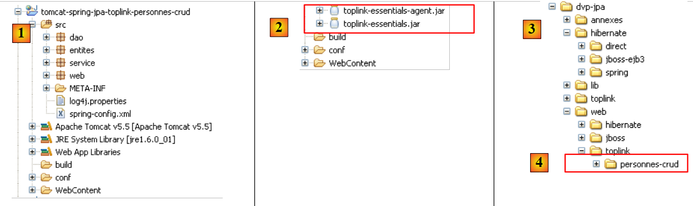 |
- في [1]: مشروع Eclipse الجديد
- في [2]: استبدلت مكتبات TopLink مكتبات Hibernate
- يوجد مجلد المشروع في [4]. سنقوم باستيراده.
<?xml version="1.0" encoding="UTF-8"?>
<!-- the JVM must be launched with the -javaagent:C:\data\2006-2007\eclipse\dvp-jpa\lib\spring\spring-agent.jar argument
(à remplacer par le chemin exact de spring-agent.jar)-->
<beans xmlns="http://www.springframework.org/schema/beans" xmlns:xsi="http://www.w3.org/2001/XMLSchema-instance"
...
<bean id="entityManagerFactory" class="org.springframework.orm.jpa.LocalContainerEntityManagerFactoryBean">
<property name="dataSource" ref="dataSource" />
<property name="jpaVendorAdapter">
<bean class="org.springframework.orm.jpa.vendor.TopLinkJpaVendorAdapter">
...
<property name="databasePlatform" value="oracle.toplink.essentials.platform.database.MySQL4Platform" />
...
</bean>
...
</beans>
- السطر 11: يتم الآن التعامل مع تنفيذ JPA بواسطة Toplink
- السطر 13: خاصية [databasePlatform] لها قيمة مختلفة عن تلك الموجودة في Hibernate: اسم فئة خاصة بـ Toplink. تم شرح مكان العثور على هذا الاسم في القسم 2.1.15.2.
 |
 |
- في [1]: اخترنا الخيار [Run / Run...] لتعديل إعدادات Tomcat
- في [2]: اخترنا علامة التبويب [الحجج]
- في [3]: أضفنا المعلمة -javaagent كما هو موضح في القسم 3.1.9.
 ## 3.5. أمثلة أخرى
كنا نرغب في عرض مثال ويب تم فيه استبدال حاوية Spring بحاوية JBoss EJB3 التي تمت مناقشتها في [القسم 3.2](#jbossejb3-personne):
## 3.5. أمثلة أخرى
كنا نرغب في عرض مثال ويب تم فيه استبدال حاوية Spring بحاوية JBoss EJB3 التي تمت مناقشتها في [القسم 3.2](#jbossejb3-personne):
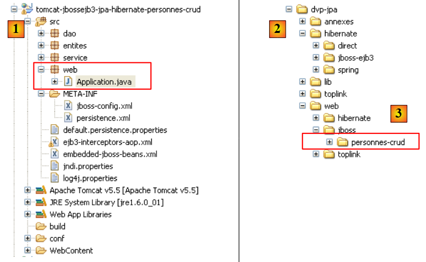 |
- في [1]: مشروع Eclipse
- في [3]: موقعه في مجلد الأمثلة. سنقوم باستيراده.
// init
@SuppressWarnings("unchecked")
public void init() throws ServletException {
try {
// retrieve servlet initialization parameters
ServletConfig config = getServletConfig();
// other initialization parameters are processed
String valeur = null;
for (int i = 0; i < paramètres.length; i++) {
// parameter value
valeur = config.getInitParameter(paramètres[i]);
// present parameter?
if (valeur == null) {
// we note the error
erreursInitialisation.add("Le paramètre [" + paramètres[i] + "] n'a pas été initialisé");
} else {
// parameter value is stored
params.put(paramètres[i], valeur);
}
}
// the [errors] view url has a special treatment
urlErreurs = config.getInitParameter("urlErreurs");
if (urlErreurs == null)
throw new ServletException("Le paramètre [urlErreurs] n'a pas été initialisé");
// application configuration
// start the EJB3 JBoss container
// configuration files ejb3-interceptors-aop.xml and embedded-jboss-beans.xml are used
EJB3StandaloneBootstrap.boot(null);
// Creating application-specific beans
EJB3StandaloneBootstrap.deployXmlResource("META-INF/jboss-config.xml");
// deploy all EJB found in the application classpath
//EJB3StandaloneBootstrap.scanClasspath("WEB-INF/classes".replace("/", File.separator));
EJB3StandaloneBootstrap.scanClasspath();
// The JNDI context is initialized. The jndi.properties file is used
InitialContext initialContext = new InitialContext();
// service layer instantiation
service = (IService) initialContext.lookup("Service/local");
// empty the base
clean();
// fill it
fill();
} catch (Exception e) {
throw new ServletException(e);
}
}
- الأسطر 28–38: يتم تشغيل حاوية EJB3. وهذا يحل محل حاوية Spring.
- السطر 41: نطلب مرجعًا إلى طبقة [الخدمة] في التطبيق.
 |